Licenciatura en Nutrición – Universidad Autónoma de Nayarit
Universidad Autónoma de Nayarit
Unidad Académica de Salud Integral
Licenciatura en Nutrición
Portafolio de Fisiopatología Nutricional
Conocimiento y práctica para la salud integral
Integrantes del Equipo
Valeria Michell Villanueva Tortolero
Tianna Paulet Tirado Uder
Nicole Alejandra Flores Quiroga
Sergio Saiyd Saldana
Diego Espíritu Medina
Materia: Fisiopatología Nutricional
Grupo: 2E
Docente: Dra. Herica Arias Mojarro
Nutrición
Salud
Ciencia
Diagnóstico
Índice
Sistema Cardiovascular
Insuficiencia Cardiaca Congestiva Crónica
La insuficiencia cardiaca congestiva crónica (ICC) es un síndrome clínico complejo que resulta de cualquier trastorno estructural o funcional que deteriora la capacidad del corazón para llenarse o expulsar sangre adecuadamente. Se caracteriza por la incapacidad del corazón para mantener un gasto cardíaco suficiente para satisfacer las demandas metabólicas del organismo, lo que provoca síntomas como disnea, fatiga y retención de líquidos.
La ICC se desarrolla cuando el miocardio sufre una lesión que compromete su función contráctil (disfunción sistólica) o su capacidad de relajación (disfunción diastólica). Esto inicia una serie de mecanismos compensatorios:
Activación neurohormonal: Incluye el sistema renina-angiotensina-aldosterona (SRAA) y el sistema nervioso simpático, que inicialmente aumentan la contractilidad y retienen sodio y agua para mantener el volumen circulante.
Remodelado cardíaco: El corazón sufre cambios estructurales como hipertrofia, dilatación y fibrosis en respuesta al estrés hemodinámico y neurohormonal.
Alteraciones hemodinámicas: Aumento de presiones de llenado, congestión pulmonar y sistémica, y disminución del gasto cardíaco.
Inflamación crónica: Liberación de citocinas proinflamatorias que contribuyen al daño miocárdico progresivo.
Con el tiempo, estos mecanismos compensatorios se vuelven maladaptativos, perpetuando un círculo vicioso que empeora la función cardíaca.
Afecta aproximadamente al 1-2% de la población adulta en países desarrollados.
La prevalencia aumenta marcadamente con la edad, alcanzando más del 10% en personas mayores de 70 años.
Más común en hombres hasta los 75 años, después la prevalencia se iguala entre géneros.
Principal causa de hospitalización en mayores de 65 años.
Mortalidad a 5 años cercana al 50% tras el diagnóstico.
Factores de riesgo principales: hipertensión arterial, cardiopatía isquémica, diabetes mellitus y obesidad.
Signos y síntomas:
Disnea: De esfuerzo, progresiva, ortopnea, disnea paroxística nocturna.
Fatiga y debilidad: Por bajo gasto cardíaco y mala perfusión muscular.
Edema periférico: Principalmente en miembros inferiores, abdomen (ascitis).
Signos de congestión: Ingurgitación yugular, crepitantes pulmonares, hepatomegalia.
Clasificación funcional de la NYHA:
Clase I: Sin limitación de la actividad física.
Clase II: Ligera limitación de la actividad física.
Clase III: Marcada limitación de la actividad física.
Clase IV: Incapacidad para realizar cualquier actividad física sin molestias.
Fármaco
Indicación Principal
Dosis Recomendada
Enalapril (IECA)
Reducción de mortalidad y remodelado ventricular
5-20 mg VO cada 12 h
Losartán (ARA II)
Alternativa a IECA si hay tos o intolerancia
50-100 mg VO/día
Carvedilol (Betabloqueador)
Mejora FEVI, reduce hospitalización y mortalidad
3.125-25 mg VO cada 12 h
Furosemida (Diurético de asa)
Control de sobrecarga hídrica y edema
20-80 mg VO o IV según congestión
Espironolactona (Antialdosterónico)
ICC sintomática con FEVI ≤35%
25-50 mg VO/día
Digoxina
Control de frecuencia en FA o ICC refractaria
0.125-0.25 mg VO/día ajustado a función renal
Dapagliflozina (iSGLT2)
Mejora pronóstico con o sin DM2
10 mg VO/día
Categoría
Aspecto
Descripción/Indicaciones
Justificación/Objetivo
Objetivos Dietoterapéuticos
Control de líquidos
Reducir la retención de líquidos y la congestión mediante manejo dietético.
Evitar edema, disnea y descompensación cardíaca.
Objetivos Dietoterapéuticos
Riesgos cardiovasculares
Controlar HTA, dislipidemia y diabetes mellitus tipo 2 asociados a la enfermedad cardiovascular.
Disminuir riesgo de eventos cardiovasculares y complicaciones.
Objetivos Dietoterapéuticos
Estado nutricional
Prevenir caquexia cardíaca, mantener masa muscular y adecuado estado nutricional.
Mejorar pronóstico y calidad de vida.
Objetivos Dietoterapéuticos
Mejora clínica
Disminuir hospitalizaciones, reingresos y mejorar calidad de vida.
Optimizar manejo integral del paciente.
Macronutrientes Clave
Sodio
Restricción moderada de 2-3 g/día en pacientes sintomáticos.
Controlar la presión arterial y evitar sobrecarga de volumen.
Macronutrientes Clave
Líquidos
Restricción de 1.5-2 L/día en casos de hiponatremia o congestión severa.
Reducir el riesgo de descompensaciones por acumulación hídrica.
Macronutrientes Clave
Proteínas
Aporte de 1.1-1.5 g/kg/día para prevenir sarcopenia y caquexia cardiaca.
Mantener y recuperar masa muscular, mejorar fuerza y funcionalidad.
Macronutrientes Clave
Lípidos
Preferir ácidos grasos mono y poliinsaturados; limitar grasas saturadas a menos del 7% del VCT.
Mejorar perfil lipídico, reducir inflamación vascular y riesgo cardiovascular.
Macronutrientes Clave
Carbohidratos
Priorizar carbohidratos complejos de bajo índice glucémico (granos enteros, legumbres, verduras).
Mejor control glucémico y energía sostenida, evitar picos glucémicos.
Recomendaciones Específicas
Dieta
Implementar dieta tipo DASH modificada con restricción de sodio.
Evidencia robusta en el control de HTA y enfermedad cardiovascular.
Recomendaciones Específicas
Frecuencia alimentaria
Fraccionar alimentación en 5-6 comidas pequeñas diarias.
Evitar sobrecarga postprandial que aumente demanda cardíaca.
Recomendaciones Específicas
Evitar alimentos
Ultraprocesados y precocinados por su contenido elevado en sodio, grasas trans y aditivos.
Minimizar consumo de compuestos perjudiciales para el corazón y la vascularización.
Recomendaciones Específicas
Monitorización
Control diario del peso corporal; >2 kg en 3 días indica posible descompensación.
Permite detección precoz de retención hídrica y ajuste terapéutico oportuno.
Recomendaciones Específicas
Suplementos
Ácidos grasos omega-3 (2-4 g/día) en pacientes con disfunción sistólica.
Mejorar función miocárdica, efectos antiinflamatorios y reducción de arritmias.
Recomendaciones Específicas
Alcohol
Limitar o evitar completamente, especialmente en pacientes con miocardiopatía alcohólica.
Evitar daño adicional al miocardio y complicaciones asociadas.
Recomendaciones Específicas
Suplementación en caquexia
Usar suplementos hipercalóricos e hiperproteicos bajo supervisión médica y nutricional.
Contrarrestar pérdida de masa corporal y mejorar estado nutricional en caquexia cardíaca.
Cardiopatía Isquémica
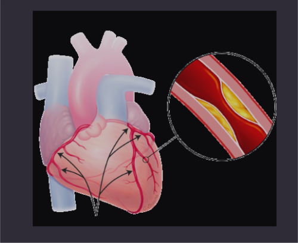
La cardiopatía isquémica es un conjunto de trastornos caracterizados por un desequilibrio entre el aporte y la demanda de oxígeno al miocardio, generalmente causado por la obstrucción de las arterias coronarias debido a la ateroesclerosis. Incluye diversas manifestaciones clínicas como angina estable, angina inestable, infarto agudo de miocardio y muerte súbita cardíaca.
La cardiopatía isquémica se desarrolla principalmente por la ateroesclerosis coronaria:
Formación de la placa aterosclerótica: Acumulación de lípidos, células inflamatorias y tejido fibroso en la íntima arterial.
Disfunción endotelial: Alteración de la vasodilatación dependiente del endotelio y aumento de la adhesión de células inflamatorias.
Inflamación crónica: Activación de macrófagos y linfocitos T que promueven la progresión de la placa.
Ruptura de placa y trombosis: La rotura de placas vulnerables expone material trombogénico que activa la cascada de coagulación, formando trombos que obstruyen el flujo coronario.
Isquemia miocárdica: La reducción del flujo sanguíneo provoca déficit de oxígeno y nutrientes en el miocardio, alterando su metabolismo y función.
Necrosis miocárdica: Si la isquemia es prolongada, se produce muerte celular irreversible (infarto).
Remodelado ventricular: Tras un infarto, el ventrículo sufre cambios estructurales que pueden llevar a insuficiencia cardíaca.
Primera causa de mortalidad a nivel mundial, responsable del 16% de las muertes globales.
Mayor prevalencia en hombres hasta los 70 años; después, se iguala entre géneros.
Incidencia aumenta exponencialmente con la edad.
Factores de riesgo principales: hipertensión, dislipidemia, diabetes, tabaquismo, obesidad, sedentarismo e historia familiar.
La mortalidad ha disminuido en países desarrollados gracias a mejoras en prevención y tratamiento, pero aumenta en países en desarrollo.
Signos y síntomas:
Angina estable: Dolor torácico opresivo, retroesternal, que puede irradiarse a mandíbula, hombro o brazo izquierdo, desencadenado por esfuerzo y aliviado con reposo o nitroglicerina.
Angina inestable: Similar a la estable pero de mayor intensidad, aparece en reposo o con esfuerzos mínimos, o presenta patrón creciente.
Infarto agudo de miocardio: Dolor torácico intenso, prolongado (>20 min), no responde a nitroglicerina, acompañado de sudoración, náuseas, vómitos, disnea.
Equivalentes isquémicos: Disnea, fatiga inusual, síncope, palpitaciones (especialmente en ancianos, mujeres y diabéticos).
Isquemia silente: Sin síntomas evidentes, detectada en pruebas diagnósticas.
Grupo farmacológico
Fármaco
Dosis
Vía
Frecuencia
Antiagregantes
Ácido acetilsalicílico
75-100 mg
Oral
1 vez/día
Antiagregantes
Clopidogrel
75 mg
Oral
1 vez/día
Betabloqueantes
Metoprolol
25-200 mg
Oral
1-2 veces/día
Betabloqueantes
Bisoprolol
2.5-10 mg
Oral
1 vez/día
Estatinas
Atorvastatina
20-80 mg
Oral
1 vez/día
Estatinas
Rosuvastatina
5-40 mg
Oral
1 vez/día
IECA
Ramipril
2.5-10 mg
Oral
1 vez/día
IECA
Perindopril
4-8 mg
Oral
1 vez/día
Nitratos
Nitroglicerina
0.3-0.6 mg
Sublingual
PRN para angina
Nitratos
Isosorbide dinitrato
20-120 mg
Oral
2-3 veces/día
Antagonistas del calcio
Amlodipino
5-10 mg
Oral
1 vez/día
Antagonistas del calcio
Diltiazem
120-360 mg
Oral
1-3 veces/día
Objetivos dietoterapéuticos:
Reducir factores de riesgo cardiovascular (dislipidemia, hipertensión, diabetes, obesidad).
Disminuir la inflamación sistémica y el estrés oxidativo.
Mejorar la función endotelial.
Prevenir la progresión de la ateroesclerosis.
Mantener un peso corporal saludable.
Macronutrientes clave:
Lípidos: Reducción de grasas saturadas (<7% VCT) y trans (evitar), aumentar ácidos grasos omega-3 y monoinsaturados.
Carbohidratos: 45-55% del VCT, preferentemente complejos y de bajo índice glucémico.
Proteínas: 15-20% del VCT, preferencia por fuentes vegetales y pescado.
Fibra: 25-30 g/día, con énfasis en fibra soluble.
Sodio: Restricción moderada (2-3 g/día).
Recomendaciones específicas:
Dieta mediterránea o DASH como patrones alimentarios recomendados.
Consumo regular de pescados grasos (2-3 veces/semana).
Incluir alimentos ricos en antioxidantes (frutas, verduras, té verde).
Limitar el consumo de carnes rojas y procesadas.
Preferir técnicas culinarias como hervido, horneado, al vapor o a la plancha.
Consumo moderado de frutos secos no salados (30 g/día).
Control del tamaño de las porciones para mantener peso saludable.
Síndrome Metabólico
El síndrome metabólico es un conjunto de factores de riesgo metabólicos interrelacionados que aumentan significativamente el riesgo de desarrollar enfermedades cardiovasculares y diabetes mellitus tipo 2. Según los criterios del NCEP ATP III, se diagnostica cuando están presentes al menos tres de los siguientes factores: obesidad abdominal, hipertrigliceridemia, HDL-colesterol bajo, hipertensión arterial y glucemia en ayunas elevada.
El síndrome metabólico tiene como base fisiopatológica principal la resistencia a la insulina y la obesidad visceral:
Resistencia a la insulina: Disminución de la sensibilidad de los tejidos a la acción de la insulina, lo que provoca hiperinsulinemia compensatoria.
Obesidad visceral: El tejido adiposo visceral es metabólicamente activo y libera ácidos grasos libres, citoquinas proinflamatorias y adipoquinas que contribuyen a la resistencia insulínica.
Dislipidemia aterogénica: Caracterizada por hipertrigliceridemia, reducción de HDL-colesterol y aumento de partículas LDL pequeñas y densas.
Estado proinflamatorio: Elevación de marcadores inflamatorios (PCR, IL-6, TNF-α) que contribuyen al daño endotelial.
Estado protrombótico: Aumento de PAI-1 y fibrinógeno que favorece eventos trombóticos.
Disfunción endotelial: Alteración de la vasodilatación dependiente del endotelio y aumento de la adhesión de células inflamatorias.
Hipertensión arterial: Resultado de la hiperinsulinemia (que aumenta la reabsorción renal de sodio), activación del sistema nervioso simpático y disfunción endotelial.
Afecta aproximadamente al 20-30% de la población adulta en países occidentales.
Prevalencia aumenta con la edad, alcanzando más del 40% en mayores de 60 años.
Mayor prevalencia en poblaciones hispanas, afroamericanas y asiáticas.
Factores de riesgo: sedentarismo, dieta hipercalórica rica en grasas saturadas y azúcares simples, predisposición genética.
Aumenta 5 veces el riesgo de diabetes tipo 2 y 2-3 veces el riesgo de enfermedad cardiovascular.
El síndrome metabólico suele ser asintomático, pero se caracteriza por:
Obesidad central: Circunferencia de cintura ≥102 cm en hombres y ≥88 cm en mujeres.
Hipertensión arterial: ≥130/85 mmHg o tratamiento antihipertensivo.
Alteraciones glucémicas: Glucemia en ayunas ≥100 mg/dL o diagnóstico de diabetes.
Dislipidemia: Triglicéridos ≥150 mg/dL y/o HDL-colesterol <40 mg/dL en hombres o <50 mg/dL en mujeres.
Signos de resistencia a la insulina: Acantosis nigricans, hirsutismo, ovario poliquístico.
Manifestaciones asociadas: Hígado graso no alcohólico, apnea del sueño, microalbuminuria.
Grupo farmacológico
Fármaco
Dosis
Vía
Frecuencia
Sensibilizadores de insulina
Metformina
500-2550 mg
Oral
1-3 veces/día
Estatinas
Atorvastatina
10-40 mg
Oral
1 vez/día
Estatinas
Rosuvastatina
5-20 mg
Oral
1 vez/día
Fibratos
Fenofibrato
145 mg
Oral
1 vez/día
Fibratos
Gemfibrozilo
600 mg
Oral
2 veces/día
Antihipertensivos
IECA/ARA-II
Variable
Oral
1-2 veces/día
Antihipertensivos
Bloqueadores de calcio
Variable
Oral
1 vez/día
Inhibidores SGLT2
Empagliflozina
10-25 mg
Oral
1 vez/día
Inhibidores SGLT2
Dapagliflozina
5-10 mg
Oral
1 vez/día
Agonistas GLP-1
Liraglutida
0.6-1.8 mg
SC
1 vez/día
Agonistas GLP-1
Semaglutida
0.25-1 mg
SC
1 vez/semana
Objetivos dietoterapéuticos:
Reducción de peso (5-10% del peso inicial) en pacientes con sobrepeso/obesidad.
Mejorar la sensibilidad a la insulina.
Normalizar el perfil lipídico.
Reducir la presión arterial.
Disminuir el estado proinflamatorio.
Macronutrientes clave:
Carbohidratos: 45-50% del VCT, preferentemente complejos y de bajo índice glucémico.
Proteínas: 15-20% del VCT, preferencia por fuentes vegetales y pescado.
Lípidos: 30-35% del VCT, con énfasis en grasas monoinsaturadas (15-20%) y poliinsaturadas (10%).
Fibra: 25-30 g/día, con énfasis en fibra soluble.
Sodio: Restricción moderada (2-3 g/día).
Recomendaciones específicas:
Dieta mediterránea o DASH como patrones alimentarios recomendados.
Déficit calórico moderado (500-1000 kcal/día menos del gasto energético).
Distribución de la ingesta en 5 comidas diarias.
Limitar alimentos con alto índice glucémico y carga glucémica.
Aumentar consumo de ácidos grasos omega-3 (pescados grasos, nueces, semillas de lino).
Reducir grasas saturadas (<7% del VCT) y eliminar grasas trans.
Incluir alimentos ricos en antioxidantes y fitoquímicos.
Limitar bebidas azucaradas y alcohol.
Consumo adecuado de magnesio, potasio y calcio.
Combinar la intervención nutricional con actividad física regular (150-300 min/semana).
Dislipidemia y Ateroesclerosis
La dislipidemia es un trastorno del metabolismo lipídico caracterizado por alteraciones cuantitativas o cualitativas de las lipoproteínas plasmáticas. Puede manifestarse como elevación del colesterol total, LDL-colesterol o triglicéridos, o como disminución del HDL-colesterol. La ateroesclerosis es el proceso patológico progresivo caracterizado por la acumulación de lípidos, células inflamatorias y tejido fibroso en la pared arterial, formando placas que obstruyen el flujo sanguíneo y pueden desencadenar eventos cardiovasculares.
La dislipidemia y la ateroesclerosis están íntimamente relacionadas:
Disfunción endotelial: El endotelio dañado por diversos factores (hipertensión, tabaquismo, hiperglucemia, LDL oxidado) aumenta su permeabilidad a las lipoproteínas.
Infiltración y retención de lipoproteínas: Las partículas de LDL penetran en la íntima arterial y son modificadas por oxidación.
Respuesta inflamatoria: El LDL oxidado activa el endotelio, que expresa moléculas de adhesión que reclutan monocitos y linfocitos T.
Formación de células espumosas: Los monocitos se diferencian a macrófagos que fagocitan el LDL oxidado, transformándose en células espumosas.
Progresión de la placa: Proliferación de células musculares lisas, producción de matriz extracelular y formación de núcleo lipídico.
Vulnerabilidad y ruptura de la placa: Las placas con gran núcleo lipídico y capa fibrosa delgada son propensas a la ruptura.
Trombosis: La ruptura expone material trombogénico que activa la cascada de coagulación, formando trombos que pueden ocluir la luz arterial.
Las dislipidemias afectan aproximadamente al 30-40% de la población adulta mundial.
Mayor prevalencia en hombres hasta los 50 años; después de la menopausia, aumenta en mujeres.
La hipercolesterolemia familiar afecta a 1:250-500 personas (forma heterocigota).
Factores de riesgo: dieta rica en grasas saturadas y trans, obesidad, sedentarismo, tabaquismo, diabetes, hipotiroidismo.
La ateroesclerosis es responsable del 85% de las muertes por enfermedad cardiovascular.
Asintomática: La mayoría de las dislipidemias no presentan síntomas hasta que causan complicaciones cardiovasculares.
Xantomas: Depósitos de lípidos en piel y tendones (característicos de hipercolesterolemia familiar).
Xantelasmas: Depósitos amarillentos de lípidos en párpados.
Arco corneal: Depósito lipídico en el borde de la córnea.
Lipemia retinalis: Aspecto lechoso de los vasos retinianos en hipertrigliceridemias severas.
Manifestaciones de ateroesclerosis: Angina de pecho, claudicación intermitente, accidente cerebrovascular, infarto agudo de miocardio.
Grupo farmacológico
Fármaco
Dosis
Vía
Frecuencia
Estatinas
Atorvastatina
10-80 mg
Oral
1 vez/día
Estatinas
Rosuvastatina
5-40 mg
Oral
1 vez/día
Estatinas
Simvastatina
10-40 mg
Oral
1 vez/día
Inhibidores absorción colesterol
Ezetimiba
10 mg
Oral
1 vez/día
Fibratos
Fenofibrato
145 mg
Oral
1 vez/día
Fibratos
Gemfibrozilo
600 mg
Oral
2 veces/día
Secuestradores ácidos biliares
Colestiramina
4-24 g
Oral
1-2 veces/día
Ácidos grasos omega-3
Icosapent etilo
2-4 g
Oral
2 veces/día
Inhibidores PCSK9
Evolocumab
140 mg
SC
Cada 2 semanas
Inhibidores PCSK9
Alirocumab
75-150 mg
SC
Cada 2 semanas
Ácido bempedoico
Ácido bempedoico
180 mg
Oral
1 vez/día
Objetivos dietoterapéuticos:
Reducir los niveles de LDL-colesterol y triglicéridos.
Aumentar los niveles de HDL-colesterol.
Disminuir la oxidación de lipoproteínas y la inflamación.
Mejorar la función endotelial.
Alcanzar y mantener un peso corporal saludable.
Macronutrientes clave:
Lípidos: 25-35% del VCT
Grasas saturadas: <7% del VCT
Grasas trans: <1% del VCT o eliminar
Grasas monoinsaturadas: 15-20% del VCT
Grasas poliinsaturadas: 10% del VCT
Colesterol: <200 mg/día
Carbohidratos: 50-55% del VCT, preferentemente complejos
Proteínas: 15-20% del VCT, preferencia por fuentes vegetales y pescado
Fibra: 25-30 g/día, con énfasis en fibra soluble (10-25 g/día)
Recomendaciones específicas:
Dieta tipo Portfolio o mediterránea como patrones alimentarios recomendados.
Incluir alimentos ricos en esteroles/estanoles vegetales (2-3 g/día).
Consumo regular de alimentos ricos en fibra soluble (avena, legumbres, frutas).
Aumentar consumo de ácidos grasos omega-3 (pescados grasos 2-3 veces/semana).
Incluir proteínas de soja (25-50 g/día).
Consumo moderado de frutos secos no salados (30-45 g/día).
Limitar el consumo de azúcares simples y fructosa añadida.
Preferir técnicas culinarias que minimicen la adición de grasas.
Limitar el consumo de alcohol o evitarlo completamente.
Incluir alimentos ricos en antioxidantes (frutas, verduras, té verde).
Obesidad
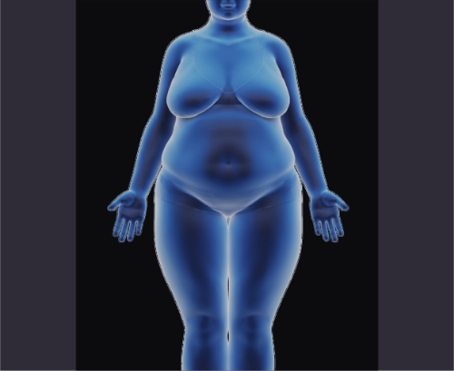
La obesidad es una enfermedad crónica y multifactorial caracterizada por un exceso de tejido adiposo que compromete la salud. Se define clínicamente por un índice de masa corporal (IMC) ≥30 kg/m². Se clasifica en diferentes grados: obesidad grado I (IMC 30-34.9), grado II (IMC 35-39.9) y grado III u obesidad mórbida (IMC ≥40). La distribución de la grasa corporal, especialmente la acumulación visceral, es un factor determinante en el riesgo de complicaciones metabólicas asociadas.
La obesidad resulta de un desequilibrio energético prolongado donde la ingesta calórica supera el gasto energético, pero su fisiopatología es compleja e involucra múltiples mecanismos:
Desregulación del balance energético: Alteraciones en las vías de señalización del hambre y la saciedad (leptina, grelina, neuropéptido Y, etc.).
Disfunción del tejido adiposo: El exceso de tejido adiposo, especialmente visceral, se convierte en un órgano endocrino disfuncional que secreta adipoquinas proinflamatorias.
Inflamación crónica de bajo grado: Aumento de citoquinas proinflamatorias (TNF-α, IL-6) que contribuyen a la resistencia insulínica.
Resistencia a la insulina: Disminución de la sensibilidad de los tejidos a la insulina, lo que provoca hiperinsulinemia compensatoria.
Alteraciones microbiota intestinal: Disbiosis que afecta la permeabilidad intestinal y el metabolismo energético.
Estrés oxidativo: Aumento de especies reactivas de oxígeno que dañan estructuras celulares.
Lipotoxicidad: Acumulación ectópica de lípidos en órganos como hígado, músculo y páncreas.
Afecta a más del 13% de la población adulta mundial (más de 650 millones de personas).
En algunos países occidentales, la prevalencia supera el 30% de la población adulta.
Mayor prevalencia en mujeres que en hombres en la mayoría de las regiones.
Factores de riesgo: predisposición genética, sedentarismo, dieta hipercalórica, trastornos del sueño, factores socioeconómicos, estrés crónico.
La prevalencia mundial se ha triplicado desde 1975.
Aumenta significativamente el riesgo de diabetes tipo 2 (7 veces), hipertensión (3 veces), dislipidemia (3 veces) y enfermedad cardiovascular (2 veces).
Reduce la esperanza de vida entre 5-20 años según la severidad.
Aumento de peso y grasa corporal: IMC ≥30 kg/m², circunferencia de cintura elevada (≥102 cm en hombres, ≥88 cm en mujeres).
Limitaciones físicas: Dificultad respiratoria con el esfuerzo, fatiga, dolor articular, reducción de la movilidad.
Alteraciones metabólicas: Resistencia a la insulina, hiperglucemia, dislipidemia, hipertensión arterial.
Manifestaciones cutáneas: Acantosis nigricans (indicador de resistencia insulínica), estrías, intertrigo.
Alteraciones respiratorias: Apnea obstructiva del sueño, síndrome de hipoventilación.
Complicaciones gastrointestinales: Reflujo gastroesofágico, hígado graso no alcohólico, colelitiasis.
Alteraciones psicológicas: Depresión, ansiedad, baja autoestima, trastornos de la conducta alimentaria.
Complicaciones reproductivas: Irregularidades menstruales, síndrome de ovario poliquístico, disfunción eréctil.
Grupo farmacológico
Fármaco
Dosis
Vía
Frecuencia
Inhibidores de lipasa
Orlistat
120 mg
Oral
3 veces/día con comidas
Agonistas GLP-1
Liraglutida
0.6-3.0 mg
SC
1 vez/día
Agonistas GLP-1
Semaglutida
0.25-2.4 mg
SC
1 vez/semana
Combinaciones
Naltrexona/Bupropión
8/90 mg
Oral
2 comp/2 veces/día
Combinaciones
Fentermina/Topiramato
3.75/23-15/92 mg
Oral
1 vez/día
Inhibidores SGLT2
Tirzepatida
5-15 mg
SC
1 vez/semana
Simpaticomiméticos
Fentermina
15-37.5 mg
Oral
1 vez/día
Objetivos dietoterapéuticos:
Reducción gradual y sostenible del peso corporal (5-10% en 6 meses).
Preservar la masa muscular durante la pérdida de peso.
Mejorar las comorbilidades asociadas (resistencia a la insulina, dislipidemia, hipertensión).
Promover cambios de hábitos alimentarios a largo plazo.
Prevenir la recuperación del peso perdido.
Macronutrientes clave:
Energía: Déficit calórico moderado (500-1000 kcal/día menos del gasto energético).
Proteínas: 1.2-1.5 g/kg de peso ideal/día (20-25% del VCT) para preservar masa muscular.
Carbohidratos: 45-50% del VCT, preferentemente complejos y de bajo índice glucémico.
Lípidos: 25-35% del VCT, con énfasis en grasas monoinsaturadas y poliinsaturadas.
Fibra: 25-30 g/día para aumentar saciedad y mejorar control glucémico.
Agua: 2-2.5 L/día para mantener hidratación adecuada.
Recomendaciones específicas:
Distribución de la ingesta en 3 comidas principales y 1-2 colaciones.
Control del tamaño de las porciones (uso de platos más pequeños, pesar alimentos).
Reducir densidad calórica de la dieta (aumentar alimentos con alto contenido de agua y fibra).
Limitar alimentos ultraprocesados, azúcares añadidos y grasas saturadas.
Aumentar consumo de vegetales y frutas (mínimo 5 porciones/día).
Preferir técnicas culinarias que minimicen la adición de grasas (vapor, horno, plancha).
Comer despacio y sin distracciones (mindful eating).
Planificar comidas y compras con anticipación.
Combinar la intervención nutricional con actividad física regular (150-300 min/semana de ejercicio aeróbico más 2-3 sesiones/semana de ejercicio de resistencia).
Considerar periodos de ayuno intermitente en pacientes seleccionados (16:8, 5:2).
Diabetes Mellitus
La diabetes mellitus es un grupo de trastornos metabólicos caracterizados por hiperglucemia crónica resultante de defectos en la secreción de insulina, en su acción, o ambas. Se clasifica principalmente en diabetes tipo 1 (destrucción autoinmune de células β pancreáticas), diabetes tipo 2 (resistencia a la insulina con déficit secretor relativo), diabetes gestacional y otros tipos específicos. La hiperglucemia crónica se asocia con daño a largo plazo en diversos órganos, especialmente ojos, riñones, nervios, corazón y vasos sanguíneos.
La fisiopatología varía según el tipo de diabetes:
Diabetes tipo 1:
Destrucción autoinmune: Linfocitos T autorreactivos destruyen las células β pancreáticas.
Deficiencia absoluta de insulina: Incapacidad para regular la glucemia.
Hiperglucemia y cetosis: Sin insulina, aumenta la gluconeogénesis hepática y la lipólisis.
Diabetes tipo 2:
Resistencia a la insulina: Disminución de la respuesta de los tejidos a la insulina, especialmente en músculo, hígado y tejido adiposo.
Disfunción de células β: Inicialmente hay hiperinsulinemia compensatoria, pero progresivamente disminuye la capacidad secretora.
Hiperglucemia progresiva: Aumento de la producción hepática de glucosa y reducción de su captación periférica.
Lipotoxicidad y glucotoxicidad: El exceso de ácidos grasos libres y glucosa daña adicionalmente las células β.
Disfunción incretínica: Reducción del efecto incretina (GLP-1, GIP).
Hiperglucagonemia: Secreción inadecuada de glucagón que contribuye a la hiperglucemia.
Complicaciones crónicas:
Microvasculares: Retinopatía, nefropatía y neuropatía por daño endotelial y engrosamiento de la membrana basal.
Macrovasculares: Ateroesclerosis acelerada que predispone a enfermedad coronaria, cerebrovascular y arterial periférica.
Estrés oxidativo: Generación de especies reactivas de oxígeno que dañan proteínas, lípidos y ADN.
Inflamación crónica: Aumento de citoquinas proinflamatorias que contribuyen al daño tisular.
Afecta a más de 537 millones de adultos en todo el mundo (10.5% de la población adulta).
Se proyecta un aumento a 783 millones para 2045.
La diabetes tipo 2 representa el 90-95% de todos los casos de diabetes.
Mayor prevalencia en regiones del Pacífico Occidental y Oriente Medio.
Factores de riesgo para diabetes tipo 2: obesidad, sedentarismo, antecedentes familiares, edad avanzada, etnia, síndrome de ovario poliquístico, diabetes gestacional previa.
Reduce la esperanza de vida en 5-10 años.
Principal causa de ceguera, insuficiencia renal terminal y amputaciones no traumáticas.
Síntomas clásicos:
Poliuria (aumento de la micción)
Polidipsia (sed excesiva)
Polifagia (aumento del apetito)
Pérdida de peso inexplicada (más común en diabetes tipo 1)
Limitar o evitar bebidas alcohólicas (riesgo de hipoglucemia).
Mantener adecuada hidratación (2-2.5 L/día).
Educación nutricional continua y monitoreo de glucemia para identificar respuestas individuales a diferentes alimentos.
Hipertensión Arterial
La hipertensión arterial (HTA) es una enfermedad crónica caracterizada por un aumento sostenido de la presión arterial por encima de los valores considerados normales. Según las guías actuales, se define como presión arterial sistólica ≥130 mmHg y/o presión arterial diastólica ≥80 mmHg. Se clasifica en diferentes estadios según la severidad y puede ser primaria (esencial) en aproximadamente el 90-95% de los casos, o secundaria cuando existe una causa identificable. Constituye el principal factor de riesgo modificable para enfermedades cardiovasculares y cerebrovasculares.
La hipertensión arterial tiene una fisiopatología compleja y multifactorial:
Alteraciones del sistema renina-angiotensina-aldosterona (SRAA): Aumento de la actividad de la renina, que incrementa la producción de angiotensina II (potente vasoconstrictor) y aldosterona (que aumenta la reabsorción de sodio y agua).
Disfunción del sistema nervioso simpático: Hiperactividad simpática que aumenta la resistencia vascular periférica, la frecuencia cardíaca y la contractilidad miocárdica.
Disfunción endotelial: Desequilibrio entre factores vasoconstrictores (endotelina-1) y vasodilatadores (óxido nítrico), con predominio de los primeros.
Alteraciones estructurales vasculares: Remodelado vascular con engrosamiento de la pared arterial y reducción del lumen.
Rigidez arterial: Pérdida de elasticidad de las grandes arterias, especialmente importante en la hipertensión sistólica aislada del anciano.
Retención de sodio y agua: Aumento del volumen intravascular y del gasto cardíaco.
Inflamación crónica de bajo grado: Contribuye al daño vascular y a la resistencia a la insulina.
Estrés oxidativo: Generación de especies reactivas de oxígeno que dañan el endotelio vascular.
Afecta aproximadamente al 30-45% de la población adulta mundial.
La prevalencia aumenta con la edad, superando el 60% en mayores de 60 años.
Mayor prevalencia en hombres hasta los 65 años; después, es más frecuente en mujeres.
Factores de riesgo: edad avanzada, obesidad, sedentarismo, consumo excesivo de sal, alcohol, tabaquismo, estrés crónico, antecedentes familiares.
Solo el 50-60% de los hipertensos conocen su condición, y menos del 50% de los tratados logran un control adecuado.
Principal factor de riesgo para accidente cerebrovascular (contribuye al 62% de los casos) y enfermedad coronaria (49%).
Responsable del 45% de las muertes por cardiopatías y del 51% de las muertes por accidente cerebrovascular.
Asintomática: La mayoría de los pacientes no presentan síntomas, por lo que se conoce como "el asesino silencioso".
Técnicas culinarias con mínimo de sal añadida, utilizando hierbas y especias como alternativa.
Combinar la intervención nutricional con actividad física regular (150 min/semana) y técnicas de manejo del estrés.
Control del peso corporal (cada 5 kg de pérdida de peso puede reducir 2-4 mmHg la presión arterial).
Sistema Respiratorio
Insuficiencia Respiratoria
La insuficiencia respiratoria es un síndrome caracterizado por la incapacidad del sistema respiratorio para mantener un adecuado intercambio gaseoso, resultando en hipoxemia (PaO₂ < 60 mmHg) y/o hipercapnia (PaCO₂ > 45 mmHg) en reposo, a nivel del mar y respirando aire ambiente. Se clasifica en insuficiencia respiratoria aguda (IRA) cuando se desarrolla en minutos u horas, o crónica (IRC) cuando evoluciona durante semanas o meses.
La insuficiencia respiratoria ocurre cuando existe un desequilibrio entre la capacidad del sistema respiratorio y las demandas metabólicas del organismo. Los mecanismos principales incluyen:
Alteración de la ventilación:
Disfunción del centro respiratorio (drogas, lesiones neurológicas)
Soporte ventilatorio según necesidad (oxigenoterapia, ventilación no invasiva o invasiva)
Corrección de alteraciones metabólicas asociadas
Objetivos dietoterapéuticos:
Prevenir o corregir la desnutrición
Reducir la producción de CO₂ (en hipercapnia)
Mantener adecuado estado de hidratación
Aportar nutrientes específicos para mejorar la función respiratoria
Prevenir complicaciones metabólicas
Macronutrientes clave:
Proteínas: 1.2-1.5 g/kg/día (ajustar según función renal)
Carbohidratos: 50-55% del aporte calórico total (reducir en hipercapnia)
Lípidos: 30-35% del aporte calórico total (aumentar en hipercapnia)
Aporte calórico: 25-30 kcal/kg/día
Recomendaciones específicas:
Dieta fraccionada en 5-6 tomas para reducir el trabajo respiratorio durante las comidas
Alimentos de fácil masticación y deglución
En pacientes con hipercapnia, aumentar proporción de lípidos y reducir carbohidratos
Asegurar adecuada hidratación para fluidificar secreciones
Suplementación con antioxidantes (vitaminas A, C, E)
Valorar suplementación con omega-3 por su efecto antiinflamatorio
Monitorizar el estado nutricional periódicamente
En pacientes con ventilación mecánica, valorar nutrición enteral precoz
EPOC (Enfermedad Pulmonar Obstructiva Crónica)
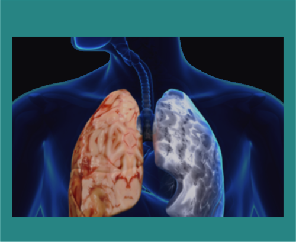
La EPOC es una enfermedad respiratoria crónica, prevenible y tratable, caracterizada por síntomas respiratorios persistentes y limitación del flujo aéreo debido a anomalías de las vías respiratorias y/o alveolares, generalmente causadas por una exposición significativa a partículas o gases nocivos. La limitación al flujo aéreo es progresiva y no completamente reversible.
La EPOC se caracteriza por cambios patológicos en cuatro compartimentos diferentes del pulmón:
Vías aéreas centrales:
Hiperplasia de glándulas mucosas
Metaplasia escamosa
Infiltración por células inflamatorias
Vías aéreas periféricas:
Inflamación crónica
Remodelación de la pared bronquial
Fibrosis peribronquial
Aumento de la producción de moco
Parénquima pulmonar:
Destrucción de tabiques alveolares (enfisema)
Pérdida de elasticidad pulmonar
Disminución de la superficie de intercambio gaseoso
Vasculatura pulmonar:
Engrosamiento de la íntima
Disfunción endotelial
Hipertrofia de la musculatura lisa vascular
Los mecanismos incluyen:
Estrés oxidativo
Desequilibrio proteasas-antiproteasas
Inflamación crónica (neutrófilos, macrófagos, linfocitos T CD8+)
Autoinmunidad
Alteración de la reparación tisular
Afecta aproximadamente al 10-15% de la población adulta mayor de 40 años
Tercera causa de muerte a nivel mundial
Prevalencia en aumento, especialmente en países en desarrollo
Mayor prevalencia en hombres, aunque está aumentando en mujeres
Factores de riesgo principales: tabaquismo (80-90% de los casos), contaminación ambiental, exposición ocupacional, factores genéticos (deficiencia de alfa-1 antitripsina)
Disnea progresiva (inicialmente con esfuerzos, luego en reposo)
Tos crónica (productiva o no)
Producción de esputo
Sibilancias
Opresión torácica
Signos de hiperinsuflación pulmonar (aumento del diámetro anteroposterior del tórax, "tórax en tonel")
Disminución de ruidos respiratorios
Uso de músculos accesorios de la respiración
En estadios avanzados: cianosis, edemas periféricos, pérdida de peso, debilidad muscular
Grupo farmacológico
Fármaco
Dosis
Vía de administración
Frecuencia
Broncodilatadores de acción corta
Salbutamol
100-200 μg
Inhalatoria
A demanda
Broncodilatadores de acción prolongada (LABA)
Formoterol
12 μg
Inhalatoria
Cada 12 horas
Anticolinérgicos de acción prolongada (LAMA)
Tiotropio
18 μg
Inhalatoria
Cada 24 horas
Corticosteroides inhalados (ICS)
Fluticasona
250-500 μg
Inhalatoria
Cada 12 horas
Inhibidores de fosfodiesterasa-4
Roflumilast
500 μg
Oral
Cada 24 horas
Mucolíticos
N-acetilcisteína
600 mg
Oral
Cada 24 horas
Oxigenoterapia crónica domiciliaria en pacientes con hipoxemia grave (PaO₂ < 55 mmHg)
Rehabilitación pulmonar
Vacunación antigripal anual y antineumocócica
Tratamiento de exacerbaciones: broncodilatadores, corticosteroides sistémicos, antibióticos
Objetivos dietoterapéuticos:
Mantener o recuperar un adecuado estado nutricional
Preservar la masa muscular respiratoria y periférica
Mejorar la capacidad funcional y la calidad de vida
Modular la respuesta inflamatoria sistémica
Prevenir la pérdida de peso y la caquexia
Macronutrientes clave:
Proteínas: 1.2-1.5 g/kg/día (hasta 2 g/kg/día en desnutrición)
Carbohidratos: 50-55% del aporte calórico total (ajustar según cociente respiratorio)
Lípidos: 30-35% del aporte calórico total
Aporte calórico: 25-30 kcal/kg/día (hasta 35-45 kcal/kg/día en desnutrición)
Dieta fraccionada (5-6 comidas pequeñas) para reducir la sensación de saciedad precoz
Priorizar alimentos de alta densidad nutricional
Suplementación nutricional oral en pacientes con desnutrición o riesgo
Asegurar adecuada hidratación (1.5-2 L/día) para fluidificar secreciones
Suplementación con vitamina D si hay deficiencia
Considerar suplementación con antioxidantes (vitaminas A, C, E) y omega-3
En pacientes con hipercapnia, ajustar la proporción de macronutrientes (aumentar lípidos, reducir carbohidratos)
Limitar el consumo de sal en pacientes con cor pulmonale e insuficiencia cardíaca derecha
Sistema Excretor y Equilibrio Ácido-Base
Alteraciones de las Funciones Glomerular y Tubular
Las alteraciones de las funciones glomerular y tubular comprenden un conjunto de trastornos que afectan la capacidad del riñón para filtrar, reabsorber y secretar sustancias, lo que puede provocar alteraciones en el equilibrio hidroelectrolítico, ácido-base y en la excreción de productos nitrogenados. Estas disfunciones pueden presentarse de manera aguda o crónica, y derivan de daño directo a las estructuras del glomérulo o de los túbulos renales.
Disfunción Glomerular:
El glomérulo es responsable de la filtración de plasma. Las alteraciones glomerulares (como en glomerulonefritis o nefropatía diabética) pueden comprometer:
La permeabilidad glomerular, causando proteinuria o hematuria.
La tasa de filtración glomerular (TFG), generando reducción del aclaramiento de creatinina y urea.
Disfunción Tubular:
Los túbulos renales están implicados en la reabsorción de agua, sodio, potasio, bicarbonato, glucosa y otros solutos, así como en la secreción de iones hidrógeno y amonio. Su afectación (como en necrosis tubular aguda o acidosis tubular renal) puede conducir a:
Pérdida de solutos (glucosuria, aminoaciduria, fosfaturia).
Las enfermedades glomerulares representan el 10–15% de las causas de enfermedad renal crónica (ERC).
La disfunción tubular aislada es menos frecuente, pero puede observarse en intoxicaciones, enfermedades hereditarias (síndrome de Fanconi), o secundaria a fármacos nefrotóxicos.
Las alteraciones glomerulares son más comunes en adultos jóvenes y pacientes con enfermedades autoinmunes o diabetes mellitus.
Glomerular:
Proteinuria (>150 mg/día, puede ser nefrótica >3.5 g/día)
Hematuria (micro o macroscópica)
Hipertensión arterial
Edema (periorbitario, maleolar)
Síndrome nefrótico o nefrítico
Tubular:
Glucosuria con glucemia normal
Pérdida renal de bicarbonato → acidosis metabólica hiperclorémica
Poliuria, nicturia
Hipopotasemia
Debilidad muscular, calambres
Retraso del crecimiento en niños (formas hereditarias)
Tipo de Tratamiento
Intervención
Indicaciones / Dosis
IECA/ARA II
Control de proteinuria y presión arterial
Enalapril 5-20 mg VO c/12 h, Losartán 50-100 mg/día
Diuréticos (de asa o tiazídicos)
Control de edema e hipertensión
Furosemida 20-80 mg VO/día
Bicarbonato sódico
Corregir acidosis metabólica en disfunción tubular
325-650 mg VO c/8-12 h según gasometría
Suplementos de potasio o fósforo
Corrección de pérdidas tubulares
KCl VO según requerimientos y niveles séricos
Quelantes de fósforo
En casos con hiperfosfatemia en ERC crónica avanzada
Carbonato de calcio, Sevelámero con comidas
Vitamina D activa (calcitriol)
Manejo del hiperparatiroidismo secundario
0.25-0.5 mcg/día VO según PTH
Tratamiento Nutricional
Objetivos dietoterapéuticos
Corregir desequilibrios hidroelectrolíticos y ácido-base.
Controlar la progresión del daño renal.
Prevenir la desnutrición y pérdida muscular.
Reducir la carga de solutos y productos nitrogenados.
Macronutrientes clave
Proteínas: 0.6-0.8 g/kg/día en enfermedad renal crónica; si hay síndrome nefrótico, aumentar a 1.0-1.2 g/kg/día.
Sodio: Restricción a 2-3 g/día en caso de edema o hipertensión.
Potasio: Ajustar según niveles séricos (restringir si hay hiperpotasemia).
Fósforo: Restricción en ERC avanzada o síndrome de Fanconi (800-1000 mg/día).
Líquidos: Ajuste según balance hídrico, diuresis y estado de hidratación.
Recomendaciones específicas
Dieta hiposódica, normoproteica y moderadamente hipofosfórica.
Evitar alimentos procesados, embutidos, quesos curados, refrescos tipo cola (altos en sodio y fósforo).
Fraccionar la dieta en 5 tomas pequeñas si hay náuseas o pérdida de apetito.
Incluir fuentes de proteína de alto valor biológico (huevo, pescado, clara de huevo).
Monitoreo periódico de electrolitos, gases arteriales y función renal.
Insuficiencia Renal Aguda (IRA)
La insuficiencia renal aguda (IRA), también conocida como lesión renal aguda (LRA), es un síndrome clínico caracterizado por un deterioro rápido (horas a días) de la función renal, que provoca acumulación de productos nitrogenados (urea, creatinina) y alteraciones en el equilibrio hidroelectrolítico y ácido-base. Se clasifica según su etiología en prerrenal, intrarrenal y postrenal.
1. Prerrenal (70% de los casos)
Causa: Hipoperfusión renal sin daño estructural inicial.
Mecanismo: Disminución del volumen circulante efectivo (hipovolemia, shock, insuficiencia cardíaca).
Consecuencia: Reducción del flujo glomerular con conservación de la integridad tubular.
2. Intrarrenal (30-35%)
Causa: Daño estructural directo al parénquima renal.
Mecanismo: Necrosis tubular aguda (isquemia o nefrotóxicos), glomerulonefritis, nefritis intersticial.
Consecuencia: Alteración de la filtración, reabsorción y secreción tubular.
3. Postrenal (<10%)
Causa: Obstrucción del flujo urinario en cualquier punto del tracto urinario.
Mecanismo: Aumento de la presión retrógrada que reduce la filtración glomerular.
Incidencia elevada en unidades de cuidados intensivos (hasta 30%).
Mayor riesgo en pacientes ancianos, deshidratados, con enfermedades crónicas o exposición a fármacos nefrotóxicos.
Mortalidad hospitalaria asociada: 20–50%, dependiendo de la causa y comorbilidades.
Oliguria (<400 mL/día) o anuria.
Aumento de urea y creatinina séricas.
Fatiga, náuseas, vómitos, edema, confusión.
Hipertensión o hipotensión (según la causa).
Signos específicos según etiología (ej.: glóbulos rojos dismórficos en glomerulonefritis, dolor lumbar en obstrucción).
Tipo de Tratamiento
Intervención
Indicaciones / Dosis
Reposición de volumen
Soluciones cristaloides IV (ej. NaCl 0.9%) en casos de hipovolemia prerrenal
500-1000 mL/h según respuesta clínica y estado hemodinámico
Suspensión de nefrotóxicos
Retiro de AINEs, aminoglucósidos, contraste yodado
Evaluación inmediata
Diuréticos (furosemida)
Para sobrecarga de volumen con oliguria persistente
20-80 mg IV, dosis ajustada a respuesta
Antibióticos ajustados
En casos sépticos o infecciosos
Según cultivo y función renal
Alcalinización urinaria
En rabdomiólisis para prevenir lesión tubular
Bicarbonato sódico IV
Diálisis
Si hay hiperkalemia grave, acidosis severa, edema pulmonar o uremia sintomática
Hemodiálisis urgente
Objetivos dietoterapéuticos
Evitar el catabolismo proteico excesivo.
Controlar el balance hidroelectrolítico.
Minimizar la carga de solutos.
Adaptar la dieta a la modalidad de tratamiento (conservador o dialítico).
Macronutrientes clave
Proteínas:
Conservador: 0.6–0.8 g/kg/día (no dializados)
Diálisis intermitente: 1.2–1.5 g/kg/día
Energía: 30–35 kcal/kg/día
Líquidos: Ajustar según balance hídrico, diuresis y pérdidas insensibles (~500–800 mL más que diuresis)
Potasio: Restricción si hay hiperpotasemia (<2–3 g/día)
Sodio: 2–3 g/día, según presión arterial y edema
Fósforo: 800–1000 mg/día si hay hiperfosfatemia
Recomendaciones específicas
Evitar alimentos ricos en potasio (plátano, aguacate, tomate, papas).
Limitar lácteos, legumbres y frutos secos por su contenido en fósforo.
Fraccionar la dieta en 5 tomas para mejorar la tolerancia digestiva.
Suplementación con aminoácidos esenciales o fórmulas específicas si hay riesgo de desnutrición.
Monitoreo frecuente de electrolitos, BUN, creatinina, balance hídrico.
Insuficiencia Renal Crónica (IRC)
La insuficiencia renal crónica (IRC) o enfermedad renal crónica (ERC) es un trastorno caracterizado por una disminución progresiva e irreversible de la función renal, definida por una tasa de filtración glomerular (TFG) < 60 mL/min/1,73 m² durante al menos 3 meses, y/o la presencia de marcadores de daño renal (albuminuria, alteraciones en el sedimento urinario, alteraciones electrolíticas, anomalías estructurales o histológicas, o antecedente de trasplante renal).
La IRC se desarrolla a través de varios mecanismos que conducen a la pérdida progresiva de nefronas funcionantes:
Estadio 5 sin diálisis: 0.6 g/kg/día (con suplementación de cetoácidos)
Estadio 5 con diálisis: 1.2-1.5 g/kg/día
Carbohidratos: 50-60% del aporte calórico total
Lípidos: 30-35% del aporte calórico total
Aporte calórico: 30-35 kcal/kg/día (ajustar según actividad física)
Recomendaciones específicas:
Restricción de sodio: 2-3 g/día (ajustar según tensión arterial y edemas)
Restricción de potasio: 2-3 g/día (en estadios avanzados o hiperpotasemia)
Restricción de fósforo: 800-1000 mg/día (en estadios 3-5)
Control de la ingesta de calcio: 1000-1500 mg/día
Restricción hídrica individualizada según diuresis residual
Suplementación con vitaminas hidrosolubles
Preferir proteínas de alto valor biológico
Técnicas culinarias para reducir potasio: remojo y doble cocción
Valoración nutricional periódica
Educación nutricional al paciente y familia
Ajuste dietético según modalidad de diálisis
Infecciones del Tracto Urinario (ITU)
Las infecciones del tracto urinario (ITU) son un conjunto de entidades clínicas caracterizadas por la colonización y multiplicación de microorganismos, generalmente bacterias, en el tracto urinario con invasión tisular y respuesta inflamatoria. Pueden afectar a la vía urinaria baja (cistitis, uretritis) o alta (pielonefritis), y clasificarse como no complicadas o complicadas según la presencia de factores de riesgo estructurales o funcionales.
La patogénesis de las ITU implica varios mecanismos:
1. Vías de infección:
Ascendente: la más frecuente, desde la uretra hacia vejiga y riñones
Hematógena: diseminación desde focos infecciosos distantes
Linfática: poco frecuente, desde órganos vecinos
2. Factores patogénicos bacterianos:
Adhesinas (fimbrias P, tipo 1): facilitan adherencia al uroepitelio
Consumo de alimentos ricos en vitamina C para acidificar la orina (en ITU por bacterias que prefieren medio alcalino)
Probióticos con Lactobacillus para restaurar flora vaginal/intestinal
Evitar retención urinaria prolongada
Higiene adecuada y micción post-coital en mujeres con ITU recurrentes
Evitar uso de productos irritantes en la zona genital
Litiasis Renal (Nefrolitiasis)
La litiasis renal o nefrolitiasis es una enfermedad caracterizada por la formación de cálculos o concreciones sólidas (piedras) en el riñón o en las vías urinarias, compuestos por sustancias cristalinas y matriz orgánica. Estos cálculos pueden variar en tamaño, composición y localización, causando diversos grados de obstrucción y sintomatología.
La formación de cálculos renales es un proceso complejo que involucra varios mecanismos:
1. Sobresaturación urinaria:
Aumento de la concentración de sustancias litogénicas (calcio, oxalato, ácido úrico, cistina)
Disminución del volumen urinario
Alteraciones del pH urinario
2. Nucleación:
Formación de cristales microscópicos
Agregación de cristales para formar núcleos
Puede ser homogénea (espontánea) o heterogénea (sobre matriz orgánica)
3. Crecimiento cristalino:
Deposición de nuevos cristales sobre los núcleos formados
Agregación de cristales pequeños
4. Retención:
Adhesión de cristales al epitelio renal
Obstrucción de túbulos colectores o conductos papilares
5. Tipos de cálculos según composición:
Cálculos de calcio (70-80%): oxalato cálcico, fosfato cálcico
Cálculos de estruvita (5-15%): fosfato amónico magnésico
Relación hombre:mujer = 2-3:1 (excepto en cálculos de estruvita)
Pico de incidencia: 30-50 años
Recurrencia: 50% a los 5-10 años sin tratamiento preventivo
Factores de riesgo: historia familiar, dieta rica en proteínas animales y sal, bajo consumo de líquidos, obesidad, síndrome metabólico, clima cálido
Cólico nefrítico: dolor intenso, de inicio brusco, localizado en fosa renal con irradiación a genitales
Hematuria (macro o microscópica)
Náuseas y vómitos
Disuria, polaquiuria, urgencia miccional
Fiebre y escalofríos (si hay infección asociada)
Anuria (en obstrucción completa bilateral o en riñón único)
Asintomático (en cálculos no obstructivos)
Grupo farmacológico
Fármaco
Dosis
Vía de administración
Frecuencia
AINEs
Diclofenaco
75 mg
Intramuscular/IV
Cada 12 horas
Opioides
Tramadol
50-100 mg
Intravenosa
Cada 6-8 horas
Antiespasmódicos
N-butilbromuro de hioscina
20 mg
Intravenosa
Cada 8 horas
Alfabloqueantes
Tamsulosina
0.4 mg
Oral
Cada 24 horas
Diuréticos tiazídicos
Hidroclorotiazida
25-50 mg
Oral
Cada 24 horas
Inhibidores de anhidrasa carbónica
Acetazolamida
250 mg
Oral
Cada 12 horas
Alcalinizantes urinarios
Citrato potásico
10-30 mEq
Oral
Cada 8-12 horas
Tratamiento específico según tipo de cálculo
Litotripsia extracorpórea por ondas de choque (LEOC)
Ureteroscopia con extracción de cálculos
Nefrolitotomía percutánea
Cirugía abierta (casos seleccionados)
Objetivos dietoterapéuticos:
Prevenir la formación y recurrencia de cálculos
Modificar factores litogénicos específicos
Mantener adecuada hidratación
Modular el pH urinario según el tipo de cálculo
Macronutrientes clave:
Proteínas: moderación en proteínas de origen animal (0.8-1 g/kg/día)
Carbohidratos: sin restricciones específicas
Lípidos: sin restricciones específicas
Recomendaciones específicas según tipo de cálculo:
1. Cálculos de oxalato cálcico:
Hidratación abundante: 2.5-3 L/día
Restricción moderada de sal: 5-6 g/día
Consumo adecuado de calcio: 1000-1200 mg/día (no restringir)
Limitar alimentos ricos en oxalatos: espinacas, ruibarbo, chocolate, frutos secos
Evitar exceso de vitamina C (>1000 mg/día)
Aumentar consumo de citrato (cítricos)
Moderar proteínas animales
2. Cálculos de fosfato cálcico:
Hidratación abundante
Restricción de sal
Acidificación de la orina (evitar dieta vegetariana estricta)
Consumo adecuado de calcio
Evitar antiácidos con calcio
3. Cálculos de ácido úrico:
Hidratación abundante
Alcalinización de la orina (dieta rica en frutas y verduras)
Restricción de purinas: vísceras, carnes rojas, mariscos
Mantener pH urinario >6.0
Control del peso corporal
4. Cálculos de estruvita:
Hidratación abundante
Acidificación de la orina
Prevención de infecciones urinarias
Dieta baja en fósforo si hay insuficiencia renal
5. Cálculos de cistina:
Hidratación muy abundante (>3 L/día)
Alcalinización de la orina
Restricción moderada de proteínas
Reducción de sal
Sistema Digestivo
Trastornos de la Motilidad y del Tránsito Digestivo
Los trastornos de la motilidad y del tránsito digestivo comprenden un grupo heterogéneo de alteraciones caracterizadas por anomalías en la contracción muscular coordinada, la propulsión y el tránsito del contenido a lo largo del tubo digestivo. Estos trastornos pueden afectar cualquier segmento del tracto gastrointestinal (esófago, estómago, intestino delgado, colon) y manifestarse como hipermotilidad, hipomotilidad o motilidad descoordinada.
La motilidad gastrointestinal normal depende de la integridad y coordinación de varios componentes:
1. Sistema nervioso entérico:
Red neuronal intrínseca del tubo digestivo que coordina la motilidad, también conocida como "segundo cerebro".
Plexo mientérico (Auerbach): Regula principalmente la contracción muscular.
Plexo submucoso (Meissner): Regula la secreción y absorción.
2. Sistema nervioso autónomo:
Parasimpático (vago): Generalmente estimula la motilidad.
Simpático: Generalmente inhibe la motilidad.
3. Células intersticiales de Cajal:
Marcapasos del tubo digestivo que generan ondas lentas de despolarización.
4. Musculatura lisa:
Organizada en capas circulares y longitudinales.
5. Complejos mioeléctricos migratorios (CMM):
Patrones cíclicos de actividad eléctrica que regulan la motilidad en ayuno.
Los trastornos pueden originarse por alteraciones en:
Neuropatías: Daño al sistema nervioso entérico o autónomo (diabetes, esclerodermia, Parkinson).
Miopatías: Alteraciones de la musculatura lisa (distrofias musculares, amiloidosis).
Alteraciones de las células intersticiales de Cajal: Disminución o disfunción.
Desequilibrios hormonales: Alteraciones en hormonas gastrointestinales (motilina, grelina, CCK).
Inflamación: Mediadores inflamatorios que alteran la función neuromuscular.
Factores psicosociales: Estrés, ansiedad y depresión que alteran el eje cerebro-intestino.
La prevalencia varía según el trastorno específico.
El síndrome de intestino irritable afecta al 10-15% de la población mundial.
La dispepsia funcional afecta al 15-20% de la población.
El estreñimiento crónico afecta al 15% de la población occidental.
Mayor prevalencia en mujeres para la mayoría de los trastornos funcionales.
Factores de riesgo: edad avanzada, sexo femenino, estrés crónico, antecedentes de cirugía abdominal, enfermedades neurológicas, trastornos endocrinos, medicamentos (opioides, anticolinérgicos).
Los síntomas varían según el segmento afectado:
Esófago:
Disfagia (dificultad para tragar)
Odinofagia (dolor al tragar)
Regurgitación
Pirosis (acidez)
Dolor torácico no cardíaco
Estómago:
Saciedad precoz
Plenitud postprandial
Náuseas y vómitos
Dolor epigástrico
Pérdida de peso
Intestino delgado y colon:
Distensión abdominal
Dolor abdominal
Cambios en el hábito intestinal (diarrea, estreñimiento o alternancia)
Urgencia defecatoria
Sensación de evacuación incompleta
Flatulencia excesiva
Borborigmos
Tratamiento médico (farmacológico):
Grupo farmacológico
Fármaco
Dosis
Vía
Frecuencia
Procinéticos
Metoclopramida
5-10 mg
Oral
3 veces/día
Domperidona
10 mg
Oral
3 veces/día
Cinitaprida
1 mg
Oral
3 veces/día
Antiespasmódicos
Butilescopolamina
10-20 mg
Oral
3-4 veces/día
Mebeverina
135-200 mg
Oral
3 veces/día
Otilonio
40 mg
Oral
2-3 veces/día
Laxantes
Polietilenglicol
17-34 g
Oral
1 vez/día
Lactulosa
10-20 g
Oral
1-2 veces/día
Bisacodilo
5-10 mg
Oral
1 vez/día
Antidiarreicos
Loperamida
2-4 mg
Oral
1-4 veces/día
Racecadotrilo
100 mg
Oral
3 veces/día
Neuromoduladores
Amitriptilina
10-50 mg
Oral
1 vez/día
Duloxetina
30-60 mg
Oral
1 vez/día
Agonistas 5-HT4
Prucaloprida
1-2 mg
Oral
1 vez/día
Antagonistas 5-HT3
Ondansetrón
4-8 mg
Oral
2-3 veces/día
Secretagogos
Linaclotida
290 μg
Oral
1 vez/día
Lubiprostona
8-24 μg
Oral
2 veces/día
Objetivos dietoterapéuticos:
Mejorar los síntomas y la calidad de vida.
Normalizar el tránsito intestinal.
Reducir la distensión y el dolor abdominal.
Mantener un adecuado estado nutricional.
Identificar y manejar intolerancias alimentarias específicas.
Comidas frecuentes y de volumen reducido (5-6 al día).
Masticar adecuadamente y comer despacio.
Mantener horarios regulares de comidas.
Para trastornos de motilidad esofágica:
Modificar consistencia según severidad (dieta blanda, semisólida o líquida).
Evitar alimentos secos o fibrosos.
Consumir líquidos durante las comidas para facilitar el tránsito.
Para gastroparesia:
Dieta baja en grasas y fibra insoluble.
Evitar alimentos ricos en fibra insoluble (piel de frutas, vegetales crudos).
Preferir alimentos de fácil digestión.
Evitar bebidas carbonatadas y alcohol.
Para síndrome de intestino irritable:
Considerar dieta baja en FODMAPs en casos seleccionados.
Identificar alimentos desencadenantes mediante diario alimentario.
Limitar cafeína, alcohol, grasas y alimentos muy condimentados.
Valorar sensibilidad al gluten no celíaca en algunos pacientes.
Para estreñimiento crónico:
Aumentar gradualmente el consumo de fibra soluble.
Asegurar hidratación adecuada.
Incluir alimentos con efecto laxante natural (kiwi, ciruelas, semillas de lino).
Establecer un horario regular para la defecación.
Para diarrea crónica:
Limitar fibra insoluble, cafeína y alcohol.
Evitar sorbitol y otros edulcorantes artificiales.
Valorar intolerancia a la lactosa, fructosa o histamina.
Cocinar los vegetales para mejorar su tolerancia.
Trastornos de las Secreciones Gástrica e Intestinal
Los trastornos de las secreciones gástrica e intestinal comprenden un grupo de alteraciones caracterizadas por anomalías en la producción, composición o regulación de las secreciones digestivas. Estas secreciones incluyen ácido clorhídrico, pepsinógeno, factor intrínseco, bicarbonato, enzimas pancreáticas, bilis y moco, entre otras. Los trastornos pueden manifestarse como hipersecreción, hiposecreción o alteración cualitativa de estas sustancias, afectando los procesos de digestión y absorción de nutrientes.
Las secreciones digestivas están reguladas por mecanismos complejos:
1. Secreción gástrica:
Células parietales: Secretan ácido clorhídrico (HCl) y factor intrínseco.
Células principales: Secretan pepsinógeno (precursor de pepsina).
Células G: Secretan gastrina, que estimula la secreción ácida.
Células D: Secretan somatostatina, que inhibe la secreción ácida.
Regulación: Neural (vago), hormonal (gastrina, histamina, somatostatina) y paracrina.
La hipersecreción ácida afecta al 10-20% de la población occidental.
La insuficiencia pancreática exocrina está presente en el 85-90% de los pacientes con pancreatitis crónica.
La prevalencia de aclorhidria aumenta con la edad (10-30% en mayores de 60 años).
La malabsorción de sales biliares afecta al 30-50% de los pacientes con resección ileal o enfermedad de Crohn ileal.
Factores de riesgo: edad avanzada, infección por H. pylori, consumo crónico de alcohol, tabaquismo, uso prolongado de IBP, enfermedades autoinmunes.
Alteraciones de la secreción ácida:
Hipersecreción:
Pirosis (acidez)
Regurgitación ácida
Dolor epigástrico
Úlceras pépticas recurrentes
Hiposecreción:
Dispepsia no ulcerosa
Sobrecrecimiento bacteriano intestinal
Anemia por deficiencia de vitamina B12
Mayor susceptibilidad a infecciones entéricas
Alteraciones de la secreción pancreática:
Esteatorrea (heces grasas)
Pérdida de peso
Distensión abdominal
Flatulencia
Deficiencias de vitaminas liposolubles (A, D, E, K)
Hiperglucemia (en casos avanzados)
Alteraciones de la secreción biliar:
Esteatorrea
Prurito
Ictericia
Heces acólicas
Orina colúrica
Malabsorción de vitaminas liposolubles
Alteraciones de la secreción intestinal:
Diarrea acuosa
Deshidratación
Desequilibrios electrolíticos
Malnutrición
Tratamiento médico (farmacológico):
Grupo farmacológico
Fármaco
Dosis
Vía
Frecuencia
Inhibidores bomba protones
Omeprazol
20-40 mg
Oral
1 vez/día
Esomeprazol
20-40 mg
Oral
1 vez/día
Pantoprazol
20-40 mg
Oral
1 vez/día
Antagonistas H2
Ranitidina
150-300 mg
Oral
1-2 veces/día
Famotidina
20-40 mg
Oral
1-2 veces/día
Antiácidos
Hidróxido Al/Mg
10-20 ml
Oral
3-4 veces/día
Enzimas pancreáticas
Pancreatina
25.000-40.000 UI
Oral
Con cada comida
Pancrelipasa
10.000-25.000 UI
Oral
Con cada comida
Ácidos biliares
Ácido ursodesoxicólico
8-15 mg/kg
Oral
1-2 veces/día
Secuestradores sales biliares
Colestiramina
4-16 g
Oral
1-2 veces/día
Colesevelam
625-1875 mg
Oral
2 veces/día
Antidiarreicos
Loperamida
2-4 mg
Oral
1-4 veces/día
Racecadotrilo
100 mg
Oral
3 veces/día
Probióticos
Varias cepas
Variable
Oral
1-2 veces/día
Objetivos dietoterapéuticos:
Optimizar la digestión y absorción de nutrientes.
Controlar los síntomas (acidez, diarrea, esteatorrea).
Prevenir o corregir deficiencias nutricionales.
Mantener o recuperar un estado nutricional adecuado.
Adaptar la alimentación a la capacidad digestiva residual.
Macronutrientes clave:
Para hipersecreción ácida:
Proteínas: 15-20% del VCT, preferir fuentes de fácil digestión.
Lípidos: 25-30% del VCT, evitar frituras y grasas saturadas.
Carbohidratos: 50-60% del VCT, preferir complejos.
Para insuficiencia pancreática exocrina:
Proteínas: 15-20% del VCT, asegurar aporte adecuado.
Lípidos: 30-35% del VCT, preferentemente en forma de triglicéridos de cadena media (MCT) en casos severos.
Carbohidratos: 45-55% del VCT, preferir complejos.
Suplementación: Vitaminas liposolubles (A, D, E, K).
Para alteraciones biliares:
Proteínas: 15-20% del VCT.
Lípidos: 20-25% del VCT, reducir en casos de esteatorrea severa.
Carbohidratos: 55-65% del VCT.
Fibra: 20-25 g/día, preferentemente soluble.
Recomendaciones específicas:
Para hipersecreción ácida:
Evitar alimentos que estimulen la secreción ácida: café, alcohol, chocolate, menta, cítricos, tomate.
Fraccionar la alimentación (5-6 comidas/día).
Evitar acostarse inmediatamente después de comer.
Reducir alimentos muy condimentados o picantes.
Limitar bebidas carbonatadas.
Evitar tabaco.
Para hiposecreción ácida:
Asegurar adecuada masticación.
Considerar suplementación con ácido clorhídrico en casos seleccionados.
Vigilar niveles de vitamina B12 y hierro.
Considerar probióticos para prevenir sobrecrecimiento bacteriano.
Para insuficiencia pancreática exocrina:
Coordinar la ingesta de enzimas pancreáticas con las comidas.
Fraccionar la alimentación.
En casos severos, reducir grasas convencionales y usar MCT.
Evitar alcohol y tabaco.
Suplementar vitaminas liposolubles si es necesario.
Dieta hiperproteica e hipercalórica en caso de desnutrición.
Para alteraciones biliares:
Reducir grasas saturadas.
Preferir grasas monoinsaturadas.
Evitar comidas copiosas.
Considerar suplementación con vitaminas liposolubles.
En caso de malabsorción de sales biliares con diarrea, dieta baja en grasas.
Evitar alcohol.
Manifestaciones de la Patología Digestiva
Las manifestaciones de la patología digestiva comprenden un conjunto de signos y síntomas que reflejan alteraciones en la estructura o función del tracto gastrointestinal. Estas manifestaciones son diversas y pueden presentarse de forma aguda o crónica, localizada o difusa, y con diferentes grados de severidad. Incluyen síntomas como dolor abdominal, náuseas, vómitos, alteraciones del tránsito intestinal, hemorragia digestiva, ictericia, entre otros, que pueden ser expresión de múltiples enfermedades digestivas subyacentes.
Las manifestaciones digestivas resultan de diversos mecanismos fisiopatológicos:
1. Dolor abdominal:
Visceral: Originado por distensión, contracción o isquemia de vísceras huecas; mediado por fibras C no mielinizadas; mal localizado.
Parietal: Originado por irritación del peritoneo parietal; mediado por fibras Aδ mielinizadas; bien localizado.
Referido: Percibido en áreas distantes al órgano afectado debido a convergencia de vías nerviosas.
2. Náuseas y vómitos:
Mediados por el centro del vómito en el bulbo raquídeo.
Desencadenados por estímulos centrales (área postrema) o periféricos (tracto GI).
Implican una secuencia coordinada: salivación, relajación del esfínter esofágico inferior, contracción de músculos abdominales y diafragma.
3. Diarrea:
Osmótica: Por sustancias no absorbibles que retienen agua en la luz intestinal.
Secretora: Por secreción activa de electrolitos y agua.
Inflamatoria: Por daño de la mucosa con exudación de proteínas, sangre y moco.
Motora: Por tránsito acelerado que reduce la absorción.
4. Estreñimiento:
De tránsito lento: Por disminución de la motilidad colónica.
Disfuncional: Por alteración en la coordinación de la defecación.
Mixto: Combinación de los anteriores.
5. Hemorragia digestiva:
Alta: Proximal al ligamento de Treitz (esófago, estómago, duodeno).
Baja: Distal al ligamento de Treitz (yeyuno, íleon, colon, recto).
Manifestada como hematemesis, melena, hematoquecia o sangre oculta en heces.
6. Ictericia:
Prehepática: Por aumento de producción de bilirrubina (hemólisis).
Hepática: Por alteración en la captación o conjugación hepática.
Posthepática: Por obstrucción del flujo biliar.
7. Malabsorción:
Luminal: Déficit de enzimas digestivas o sales biliares.
Mucosa: Daño en enterocitos o reducción de superficie absortiva.
Posabsortiva: Obstrucción linfática o insuficiencia vascular.
Los síntomas gastrointestinales representan el 10-15% de las consultas en atención primaria.
El dolor abdominal es el síntoma digestivo más frecuente (15-25% de la población).
La prevalencia de dispepsia en la población general es del 20-40%.
La diarrea aguda afecta a cada adulto 1-2 veces al año en países desarrollados.
El estreñimiento crónico afecta al 15-20% de la población occidental.
La hemorragia digestiva alta tiene una incidencia de 50-150 casos/100,000 habitantes/año.
La ictericia está presente en el 2-5% de los ingresos hospitalarios.
Factores de riesgo: edad avanzada, medicamentos (AINE, antibióticos), dieta inadecuada, sedentarismo, estrés, tabaquismo, alcohol.
Dolor abdominal:
Características: Localización, irradiación, intensidad, carácter, factores agravantes y atenuantes.
Moderar consumo de alimentos ricos en cobre en enfermedad de Wilson.
Para síndrome de malabsorción:
Adaptar según el déficit específico (enzimático, biliar, mucoso).
En insuficiencia pancreática: coordinar enzimas con las comidas.
En enfermedad celíaca: dieta estricta sin gluten.
En malabsorción de lactosa: restricción de lactosa.
Suplementación nutricional según deficiencias específicas.
En casos graves: considerar triglicéridos de cadena media (MCT).
Dieta hiperproteica e hipercalórica en caso de desnutrición
Esofagitis
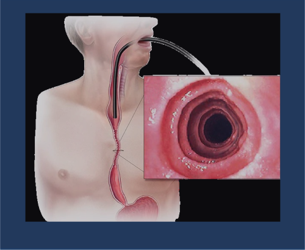
La esofagitis es la inflamación de la mucosa esofágica que puede ser aguda o crónica. Se caracteriza por la presencia de eritema, edema, erosiones o úlceras en la mucosa esofágica, causando síntomas como pirosis, dolor retroesternal, disfagia y odinofagia. Existen varios tipos según su etiología: esofagitis por reflujo (la más común), esofagitis infecciosa, esofagitis eosinofílica, esofagitis por píldoras, esofagitis por cáusticos y esofagitis por radiación.
La fisiopatología varía según el tipo de esofagitis:
1. Esofagitis por reflujo (ERGE):
Exposición prolongada de la mucosa esofágica al contenido ácido gástrico.
Disfunción del esfínter esofágico inferior (EEI) que permite el reflujo.
Aclaramiento esofágico deficiente que prolonga el contacto con el ácido.
Retraso del vaciamiento gástrico que aumenta el volumen refluido.
Hipersecreción ácida en algunos casos.
Daño tisular por ácido, pepsina y, en casos de reflujo duodenogástrico, sales biliares.
Respuesta inflamatoria con liberación de citoquinas y quimioquinas.
2. Esofagitis eosinofílica:
Reacción inmunológica mediada por alérgenos alimentarios.
Infiltración de la mucosa por eosinófilos (≥15 eosinófilos/campo de alto poder).
Activación de linfocitos Th2 con liberación de IL-5, IL-13 y eotaxina-3.
Remodelado tisular con fibrosis y disfunción motora secundaria.
3. Esofagitis infecciosa:
Invasión directa de la mucosa por microorganismos (Candida, virus herpes, CMV).
Más frecuente en pacientes inmunocomprometidos.
Destrucción epitelial con formación de úlceras y pseudomembranas.
4. Esofagitis por píldoras:
Contacto directo y prolongado del medicamento con la mucosa.
Daño local por pH extremo o efecto citotóxico directo.
Estasis del medicamento por alteraciones de la motilidad o estenosis.
5. Esofagitis por cáusticos:
Necrosis coagulativa (álcalis) o licuefactiva (ácidos).
Daño transmural con posible perforación.
Fase aguda seguida de cicatrización con estenosis.
6. Esofagitis por radiación:
Daño al DNA celular por radiación ionizante.
Alteración de la microcirculación con isquemia.
Fibrosis progresiva en fase crónica.
La esofagitis por reflujo afecta al 10-20% de la población occidental.
La prevalencia de esofagitis erosiva en pacientes con ERGE es del 30-40%.
La esofagitis eosinofílica tiene una prevalencia de 1-5/10,000 habitantes, con predominio en varones jóvenes (3:1).
La esofagitis infecciosa afecta principalmente a pacientes inmunodeprimidos (30-40% de pacientes con SIDA avanzado).
La esofagitis por píldoras representa el 20-30% de las esofagitis químicas.
Factores de riesgo para esofagitis por reflujo: obesidad, embarazo, hernia hiatal, tabaquismo, alcohol, ciertos medicamentos (anticolinérgicos, calcioantagonistas, nitratos).
Síntomas comunes a todos los tipos:
Pirosis (sensación de quemazón retroesternal)
Dolor torácico/retroesternal
Disfagia (dificultad para tragar)
Odinofagia (dolor al tragar)
Regurgitación
Específicos según tipo:
Esofagitis por reflujo:
Síntomas típicos: pirosis, regurgitación ácida
Síntomas atípicos: tos crónica, disfonía, asma, dolor torácico
Empeoramiento postprandial y en decúbito
Alivio con antiácidos
Esofagitis eosinofílica:
Disfagia como síntoma predominante
Impactación alimentaria frecuente
Dolor torácico no relacionado con la deglución
Síntomas de reflujo refractario a IBP
Antecedentes de atopia (asma, rinitis, dermatitis)
Esofagitis infecciosa:
Odinofagia intensa
Disfagia
Fiebre
En candidiasis: placas blanquecinas adherentes
En infección herpética: vesículas y úlceras dolorosas
Reducir el consumo de alimentos muy condimentados.
Mantener peso adecuado (la obesidad aumenta la presión intraabdominal).
Cena ligera y al menos 2-3 horas antes de acostarse.
Modificaciones del estilo de vida:
Elevar la cabecera de la cama 15-20 cm.
Evitar ropa ajustada.
No acostarse inmediatamente después de comer.
Abandonar el tabaco.
Reducir el consumo de alcohol.
Para esofagitis eosinofílica:
Dietas de eliminación:
Dieta de eliminación empírica de 6 alimentos (leche, trigo, huevo, soja, frutos secos, pescado/mariscos).
Dieta de eliminación dirigida por pruebas alérgicas.
Dieta elemental (fórmulas de aminoácidos) en casos refractarios.
Reintroducción secuencial para identificar desencadenantes específicos.
Asegurar adecuado aporte nutricional durante las dietas restrictivas.
Considerar suplementación con calcio y vitamina D si se elimina la leche.
Para esofagitis infecciosa:
Fase aguda: dieta líquida o semisólida según tolerancia.
Alimentos a temperatura ambiente (evitar extremos térmicos).
Evitar alimentos ácidos, picantes o ásperos.
Asegurar adecuada hidratación.
Suplementación nutricional si hay pérdida de peso significativa.
Progresión dietética según mejora de síntomas.
Para esofagitis por píldoras:
Tomar medicamentos con abundante agua (al menos 100 ml).
Ingerir medicamentos en posición erguida.
No acostarse hasta 30 minutos después de tomar medicamentos.
Considerar formas líquidas de medicación en pacientes con disfagia.
Dieta blanda durante la fase aguda.
Para esofagitis por cáusticos:
Fase aguda: nutrición parenteral o enteral por sonda nasoyeyunal según gravedad.
Fase de recuperación: progresión dietética según hallazgos endoscópicos.
Dieta líquida → semisólida → blanda → normal.
Adecuación de la textura en caso de estenosis residual.
Suplementación nutricional en caso de disfagia prolongada.
Hernia Hiatal
La hernia hiatal es una condición anatómica caracterizada por el desplazamiento de una porción del estómago (y ocasionalmente otros órganos abdominales) hacia la cavidad torácica a través del hiato esofágico del diafragma. Se clasifica principalmente en tres tipos: hernia por deslizamiento (tipo I, la más común, 90%), hernia paraesofágica (tipo II) y hernia mixta (tipo III). En casos extremos, puede existir una hernia tipo IV con migración de otros órganos además del estómago.
La hernia hiatal se desarrolla por alteraciones anatómicas y funcionales:
1. Factores anatómicos:
Debilidad o laxitud de los ligamentos frenoesofágicos.
Aumento del tamaño del hiato esofágico diafragmático.
Acortamiento del esófago (esófago de Barrett, esofagitis crónica).
Alteraciones del ángulo de His (ángulo entre esófago y estómago).
2. Factores funcionales:
Aumento crónico de la presión intraabdominal (obesidad, embarazo, ascitis).
Disminución del tono del esfínter esofágico inferior (EEI).
Alteraciones de la motilidad esofágica.
Envejecimiento con pérdida de elasticidad tisular.
3. Consecuencias fisiopatológicas:
Hernia por deslizamiento (tipo I):
Desplazamiento de la unión gastroesofágica por encima del diafragma.
Disrupción de la barrera antirreflujo natural.
Reducción de la presión del EEI.
Aumento de episodios de reflujo gastroesofágico.
Aclaramiento esofágico deficiente.
Hernia paraesofágica (tipo II):
Unión gastroesofágica en posición normal.
Herniación de fondo gástrico adyacente al esófago.
Riesgo de volvulación, estrangulación o isquemia.
Compresión pulmonar en hernias grandes.
Hernia mixta (tipo III):
Combinación de hernia por deslizamiento y paraesofágica.
Mayor riesgo de complicaciones mecánicas.
Síntomas mixtos de reflujo y compresión.
4. Complicaciones:
Esofagitis por reflujo crónico.
Estenosis péptica.
Esófago de Barrett.
Anemia por sangrado crónico.
Volvulación gástrica.
Estrangulación e isquemia.
Síntomas respiratorios por compresión.
La prevalencia global se estima en 10-80% de la población, aumentando con la edad.
Las hernias por deslizamiento (tipo I) representan el 90% de los casos.
Las hernias paraesofágicas (tipos II-IV) constituyen el 5-10% restante.
Mayor prevalencia en personas mayores de 50 años.
Relación mujer:hombre de aproximadamente 2:1.
Factores de riesgo: edad avanzada, obesidad, embarazos múltiples, cirugía abdominal previa, EPOC con tos crónica, estreñimiento crónico.
El 30-50% de los pacientes con hernia hiatal presentan síntomas de reflujo gastroesofágico.
Solo el 5-15% de las hernias hiatales son sintomáticas.
Hernia por deslizamiento (tipo I):
Asintomática en muchos casos.
Síntomas de reflujo gastroesofágico:
Pirosis (acidez retroesternal).
Regurgitación ácida.
Disfagia ocasional.
Dolor torácico no cardíaco.
Síntomas extraesofágicos: tos crónica, ronquera, asma.
Hernia paraesofágica (tipo II) y mixta (tipo III):
Sensación de plenitud o presión torácica postprandial.
Volvulación gástrica: dolor intenso, vómitos improductivos, imposibilidad de pasar sonda nasogástrica.
Estrangulación: dolor severo, signos de sepsis, shock.
Perforación: dolor súbito, neumoperitoneo, signos de sepsis.
Hallazgos en exploración física:
Generalmente normal en hernias pequeñas.
Ruidos hidroaéreos en tórax en hernias grandes.
Disminución de ruidos respiratorios basales.
Signos de anemia en casos de sangrado crónico.
El tratamiento farmacológico se dirige principalmente a controlar los síntomas de reflujo asociados:
Grupo farmacológico
Fármaco
Dosis
Vía
Frecuencia
IBP
Omeprazol
20-40 mg
Oral
1-2 veces/día
Esomeprazol
20-40 mg
Oral
1 vez/día
Pantoprazol
40 mg
Oral
1 vez/día
Antagonistas H2
Ranitidina
150 mg
Oral
2 veces/día
Famotidina
20 mg
Oral
2 veces/día
Procinéticos
Domperidona
10 mg
Oral
3 veces/día
Cinitaprida
1 mg
Oral
3 veces/día
Antiácidos
Hidróxido Al/Mg
10-20 ml
Oral
3-4 veces/día
Alginatos
Alginato sódico
10-20 ml
Oral
3-4 veces/día
Indicado en hernias paraesofágicas sintomáticas, hernias tipo III y IV, y hernias tipo I con síntomas refractarios al tratamiento médico.
Técnicas: funduplicatura de Nissen (360°), funduplicatura de Toupet (270°), funduplicatura de Dor (180°).
Abordaje: laparoscópico (preferente), abierto o transtorácico.
Objetivos dietoterapéuticos:
Reducir los síntomas de reflujo gastroesofágico.
Prevenir la distensión gástrica que puede empeorar la herniación.
Evitar el aumento de la presión intraabdominal.
Mantener o lograr un peso corporal adecuado.
Prevenir complicaciones como esofagitis, estenosis o Barrett.
Recomendaciones específicas:
Patrón alimentario:
Fraccionar la alimentación (5-6 comidas pequeñas al día).
Masticar adecuadamente y comer despacio.
Mantener posición erguida durante y después de las comidas.
Esperar 2-3 horas después de cenar antes de acostarse.
Evitar comidas copiosas, especialmente en la cena.
Alimentos y bebidas a limitar o evitar:
Relajantes del esfínter esofágico inferior:
Chocolate
Menta y hierbabuena
Café (incluso descafeinado)
Té negro
Bebidas alcohólicas
Alimentos grasos (frituras, salsas cremosas)
Cebolla y ajo crudos
Irritantes de la mucosa esofágica:
Cítricos y jugos cítricos
Tomate y derivados
Vinagre y alimentos encurtidos
Bebidas carbonatadas
Alimentos muy condimentados o picantes
Alimentos muy ácidos
Técnicas culinarias recomendadas:
Cocción al vapor, hervido, horno, papillote.
Evitar frituras y rebozados.
Preparaciones con poca grasa añadida.
Temperatura moderada de los alimentos (ni muy calientes ni muy fríos).
Recomendaciones para casos específicos:
Hernia hiatal con disfagia:
Adaptar la textura de los alimentos según el grado de disfagia.
Preferir alimentos húmedos y de fácil masticación.
Evitar alimentos secos o fibrosos.
Utilizar salsas suaves para facilitar la deglución.
Hernia hiatal con anemia:
Aumentar el consumo de alimentos ricos en hierro (carnes rojas magras, legumbres).
Combinar con alimentos ricos en vitamina C para mejorar absorción.
Considerar suplementación con hierro si está indicado médicamente.
Modificaciones del estilo de vida:
Control de peso: pérdida de peso en caso de sobrepeso/obesidad.
Elevar la cabecera de la cama 15-20 cm.
Evitar ropa ajustada en abdomen.
Evitar ejercicios que aumenten la presión intraabdominal.
Abandonar el tabaco.
Técnicas de manejo del estrés (el estrés puede aumentar la sintomatología).
Disfagia
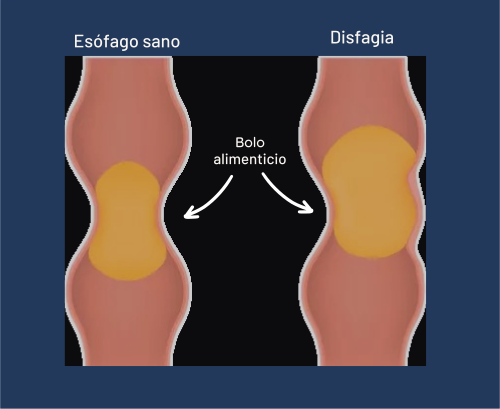
La disfagia es la dificultad o imposibilidad para la deglución normal de líquidos y/o sólidos. Representa un síntoma, no una enfermedad en sí misma, y puede ser manifestación de múltiples patologías. Se clasifica en dos grandes grupos: disfagia orofaríngea (o alta, relacionada con alteraciones en la transferencia del bolo desde la boca a la faringe y esófago proximal) y disfagia esofágica (o baja, relacionada con alteraciones en el transporte del bolo a través del esófago). También puede clasificarse según su etiología en mecánica/obstructiva o motora/funcional.
La deglución normal es un proceso complejo que involucra más de 30 músculos y varios pares craneales, dividido en fases:
Fase oral preparatoria: Voluntaria, incluye masticación y formación del bolo.
Fase oral propulsiva: Voluntaria, propulsión del bolo hacia la faringe.
Fase faríngea: Involuntaria, desencadena el reflejo deglutorio.
Fase esofágica: Involuntaria, transporte del bolo por peristalsis.
La disfagia puede resultar de alteraciones en cualquiera de estas fases:
Adaptar la consistencia de alimentos y líquidos según la capacidad deglutoria.
Adaptación de texturas y consistencias: La International Dysphagia Diet Standardisation Initiative (IDDSI) establece un marco de referencia para la adaptación de texturas:
Líquidos:
Nivel 0: Líquidos finos (agua, té, café).
Nivel 1: Líquidos ligeramente espesados (similar a néctar).
Nivel 2: Líquidos moderadamente espesados (similar a miel).
Nivel 3: Líquidos muy espesados (pudding).
Sólidos:
Nivel 3: Purés y alimentos triturados homogéneos.
Nivel 4: Alimentos blandos y triturados con tenedor.
Nivel 5: Alimentos blandos y jugosos que requieren masticación suave.
Nivel 6: Alimentos blandos que requieren masticación.
Nivel 7: Dieta normal.
Recomendaciones específicas según tipo de disfagia:
Para disfagia orofaríngea:
Posición adecuada: sentado a 90°, ligera flexión anterior del cuello.
Técnica de deglución segura: pequeños bocados, masticación completa.
Evitar distracciones durante las comidas.
Concentración en el acto de tragar (deglución consciente).
Evitar alimentos que se fragmenten fácilmente (arroz, galletas secas).
Considerar espesantes para líquidos según grado de disfagia.
Para disfagia esofágica:
Comidas pequeñas y frecuentes.
Masticación exhaustiva.
Ingerir líquidos con los sólidos para facilitar el tránsito.
Evitar alimentos secos o fibrosos.
Preferir alimentos húmedos y blandos.
Evitar temperaturas extremas.
Comer despacio y en ambiente relajado.
Postura erguida durante y después de las comidas.
Alimentos problemáticos a evitar:
Alimentos con texturas mixtas (sopas con trozos, yogur con frutas).
Alimentos fibrosos (piña, apio, espárragos).
Alimentos pegajosos (caramelos, pan de molde).
Alimentos que se desmenuzan (galletas secas, bizcochos).
Alimentos con piel o semillas (uvas, tomates).
Alimentos secos (frutos secos, pan tostado).
Alimentos en grano (arroz, legumbres enteras).
Recomendaciones para mejorar la ingesta calórico-proteica:
Enriquecer purés con aceite de oliva, leche en polvo, queso cremoso.
Utilizar suplementos nutricionales adaptados a la disfagia.
Considerar fortificación con módulos proteicos o energéticos.
Preferir alimentos de alta densidad nutricional.
Monitorizar la ingesta y el peso regularmente.
En casos de disfagia severa:
Valorar nutrición enteral complementaria o total.
Sonda nasogástrica temporal o PEG en casos crónicos.
Mantener estimulación oral mínima si es posible (sabores, pequeñas cantidades).
Acalasia
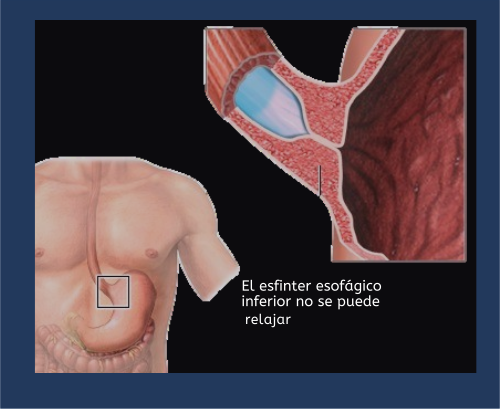
La acalasia es un trastorno motor primario del esófago caracterizado por la ausencia de peristalsis en el cuerpo esofágico y una relajación incompleta o ausente del esfínter esofágico inferior (EEI). Esto resulta en una obstrucción funcional al paso de alimentos y líquidos hacia el estómago. Se clasifica en tres tipos según los hallazgos manométricos: tipo I (acalasia clásica), tipo II (con presurización esofágica) y tipo III (espástica).
La acalasia se produce por una degeneración selectiva de las neuronas inhibitorias (principalmente nitrérgicas) del plexo mientérico esofágico, lo que conduce a:
1. Alteraciones neuronales:
Pérdida de neuronas inhibitorias que liberan óxido nítrico (NO) y péptido intestinal vasoactivo (VIP).
Predominio relativo de la inervación colinérgica excitatoria.
Infiltración inflamatoria (linfocitos T CD3+/CD8+) en el plexo mientérico.
Reducción del número total de células ganglionares.
2. Consecuencias funcionales:
En el EEI: Pérdida de la relajación mediada por NO, resultando en hipertonía y relajación incompleta durante la deglución.
En el cuerpo esofágico: Ausencia de peristalsis coordinada, con contracciones simultáneas ineficaces o aperistalsis completa.
Presurización esofágica: En acalasia tipo II, el esófago actúa como una cavidad común que se presuriza.
Contracciones espásticas: En acalasia tipo III, presencia de contracciones prematuras espásticas.
3. Etiología:
Idiopática: La mayoría de los casos, posiblemente autoinmune.
Genética: Asociación con HLA-DQw1, mutaciones en genes como ALADIN (síndrome de Allgrove).
Infecciosa: Posible rol de infecciones virales (herpes, varicela-zoster) o enfermedad de Chagas (Trypanosoma cruzi).
Autoinmune: Presencia de anticuerpos contra neuronas entéricas y receptores muscarínicos.
4. Progresión de la enfermedad:
Dilatación progresiva del esófago.
Tortuosidad esofágica en casos avanzados ("megaesófago" o "esófago sigmoideo").
Hipertrofia muscular compensatoria.
Estasis alimentaria con riesgo de esofagitis, candidiasis y aspiración.
Riesgo aumentado de carcinoma escamoso esofágico a largo plazo (10-50 veces).
Incidencia anual: 1-2 casos por 100,000 habitantes.
Prevalencia: 10 casos por 100,000 habitantes.
Distribución por edad: Bimodal, con picos en la tercera década y después de los 60 años.
Distribución por sexo: Similar en hombres y mujeres.
Edad media al diagnóstico: 40-60 años.
La acalasia tipo II es la más frecuente (50%), seguida del tipo I (30%) y tipo III (20%).
En Latinoamérica, la enfermedad de Chagas es una causa importante de acalasia secundaria.
Factores de riesgo: Predisposición genética, infecciones virales, enfermedad autoinmune.
Síntomas principales:
Disfagia: Tanto para sólidos como para líquidos, progresiva (90-100% de los pacientes).
Regurgitación: De alimentos no digeridos, especialmente nocturna (76-91%).
Pérdida de peso: Variable, desde leve hasta severa (35-91%).
Dolor torácico: Más frecuente en acalasia tipo III (25-64%).
Pirosis: A menudo confundida con ERGE (27-42%).
Síntomas respiratorios:
Tos nocturna (30%)
Aspiración recurrente (10-30%)
Neumonías aspirativas (10%)
Broncoespasmo
Hallazgos en la exploración física:
Generalmente normal
Signos de pérdida de peso y malnutrición en casos avanzados
Halitosis por estasis alimentaria
Ruidos hidroaéreos en tórax (en megaesófago)
Complicaciones:
Esofagitis por estasis
Candidiasis esofágica
Divertículos esofágicos
Megaesófago
Carcinoma escamoso esofágico (riesgo 3-7% a los 20-25 años)
Características según subtipo:
Tipo I (clásica): Disfagia progresiva, regurgitación, pérdida de peso significativa.
Tipo II (con presurización): Síntomas similares pero menos severos, mejor respuesta al tratamiento.
Tipo III (espástica): Dolor torácico más prominente, episodios de disfagia más intensos pero intermitentes.
El tratamiento farmacológico tiene eficacia limitada y generalmente se reserva para pacientes que no son candidatos a procedimientos intervencionistas:
Grupo farmacológico
Fármaco
Dosis
Vía
Frecuencia
Calcioantagonistas
Nifedipino
10-30 mg
Sublingual
30 min antes de comidas
Diltiazem
60-90 mg
Oral
3 veces/día
Nitratos
Isosorbide dinitrato
5-10 mg
Sublingual
15 min antes de comidas
Inhibidores fosfodiesterasa
Sildenafilo
25-50 mg
Oral
1 hora antes de comidas
Anticolinérgicos
Atropina
0.4-0.6 mg
Sublingual
Antes de comidas
Toxina botulínica
Botox
100 UI
Endoscópica
Cada 6-12 meses
Dilatación neumática: Eficacia del 70-80% a corto plazo, 50-60% a los 5 años.
Miotomía de Heller laparoscópica: Eficacia del 90% a corto plazo, 80% a los 5 años.
POEM (Miotomía endoscópica por vía oral): Eficacia similar a la miotomía de Heller.
Stents esofágicos: En casos seleccionados.
Esofagectomía: En casos de megaesófago avanzado o fallo de otros tratamientos.
Objetivos dietoterapéuticos:
Facilitar el tránsito esofágico de los alimentos.
Prevenir la regurgitación y aspiración.
Mantener o recuperar un adecuado estado nutricional.
Mejorar la calidad de vida relacionada con la alimentación.
Prevenir complicaciones asociadas a la estasis alimentaria.
Recomendaciones específicas:
Modificaciones en la textura y consistencia:
Preferir alimentos blandos, húmedos y bien lubricados.
Evitar alimentos secos, fibrosos o pegajosos.
Utilizar salsas, caldos o aceite para facilitar la deglución.
Triturar o procesar alimentos según necesidad individual.
Consistencia de líquidos: valorar individualmente (algunos pacientes toleran mejor líquidos espesados).
Técnicas de alimentación:
Posición erguida durante las comidas (90°).
Comer lentamente y masticar exhaustivamente.
Tomar pequeños bocados.
Beber sorbos de líquido entre bocados para "empujar" el alimento.
Evitar acostarse inmediatamente después de comer (esperar 2-3 horas).
Posición elevada durante el sueño para reducir regurgitación nocturna.
Patrón alimentario:
Comidas frecuentes y de volumen reducido (5-6 al día).
Última comida al menos 3 horas antes de acostarse.
Ambiente tranquilo durante las comidas, sin distracciones.
Evitar hablar mientras se come.
Mantener una buena hidratación (preferiblemente entre comidas).
Alimentos recomendados:
Purés y cremas de verduras con textura homogénea.
Carnes y pescados tiernos, picados o en puré.
Huevos (revueltos, tortilla francesa, pasados por agua).
Lácteos (yogur, queso fresco, natillas, flan).
Frutas cocidas, en compota o puré.
Pasta bien cocida con salsas suaves.
Arroz caldoso o bien cocido.
Pan de molde sin corteza o remojado.
Alimentos a evitar:
Carnes fibrosas o en trozos grandes.
Pan duro o tostado, galletas secas.
Frutos secos y semillas.
Frutas y verduras crudas con fibras (piña, apio, espárragos).
Alcohol (relaja el EEI pero puede empeorar los síntomas).
Suplementación nutricional:
Valorar suplementos nutricionales completos de textura líquida o tipo pudding en casos de pérdida de peso significativa.
Considerar suplementación con vitaminas y minerales en casos de restricción dietética severa o malnutrición.
Seguimiento nutricional:
Control regular del peso y estado nutricional.
Ajuste de recomendaciones según respuesta al tratamiento intervencionista.
Valoración de la calidad de vida relacionada con la alimentación.
Educación nutricional continua al paciente y cuidadores.
Estenosis Esofágica
La estenosis esofágica es un estrechamiento anormal del lumen esofágico que dificulta o impide el paso de alimentos y líquidos hacia el estómago. Puede ser congénita o adquirida, benigna o maligna, y afectar cualquier segmento del esófago. Las estenosis se clasifican según su etiología (péptica, cáustica, postquirúrgica, actínica, infecciosa, etc.), morfología (simple o compleja) y localización anatómica (proximal, media o distal).
La estenosis esofágica se desarrolla a través de diversos mecanismos fisiopatológicos:
1. Mecanismos de formación:
Inflamación crónica: Activación de fibroblastos y miofibroblastos.
Lesión epitelial: Pérdida de la barrera mucosa normal.
Cicatrización anormal: Depósito excesivo de colágeno y matriz extracelular.
Remodelado tisular: Alteración de la proporción entre síntesis y degradación de matriz extracelular.
Isquemia: Reducción del flujo sanguíneo con fibrosis secundaria.
2. Etiologías específicas y mecanismos:
Estenosis péptica: Exposición crónica al ácido y pepsina con inflamación, ulceración y cicatrización fibrosa.
Estenosis por cáusticos: Necrosis tisular aguda seguida de inflamación y cicatrización constrictiva.
Estenosis postquirúrgica: Isquemia en la línea de anastomosis, fuga, tensión excesiva o técnica inadecuada.
Estenosis por radiación: Daño vascular con endarteritis obliterante, isquemia y fibrosis progresiva.
Anillos y membranas: Anomalías congénitas o adquiridas de la mucosa y submucosa.
Estenosis por esclerodermia: Atrofia de la musculatura lisa y fibrosis de la pared esofágica.
Estenosis infecciosas: Ulceración y cicatrización secundarias a infecciones (CMV, herpes, tuberculosis).
Estenosis por medicamentos: Lesión directa de la mucosa con retención del fármaco.
Estenosis por esofagitis eosinofílica: Inflamación crónica con remodelado fibrótico.
3. Consecuencias fisiopatológicas:
Obstrucción mecánica al paso del bolo alimenticio.
Dilatación esofágica proximal a la estenosis.
Estasis alimentaria con riesgo de aspiración.
Malnutrición progresiva.
Alteraciones en la motilidad esofágica secundarias.
La estenosis péptica representa el 70-80% de todas las estenosis benignas.
La incidencia de estenosis péptica ha disminuido con el uso de IBP (de 10-15% a 1-2% en pacientes con ERGE).
Las estenosis cáusticas representan el 10-15% de las estenosis benignas.
La estenosis postquirúrgica ocurre en el 3-15% de las anastomosis esofágicas.
La estenosis por radiación se desarrolla en el 2-5% de pacientes que reciben radioterapia torácica.
El anillo de Schatzki está presente en el 6-14% de los estudios baritados esofágicos.
Factores de riesgo: ERGE crónico, ingesta de cáusticos, radioterapia torácica, cirugía esofágica, esofagitis eosinofílica, esclerodermia.
Mayor prevalencia en adultos mayores para estenosis pépticas.
Las estenosis cáusticas son más frecuentes en niños (accidental) y adultos jóvenes (intento suicida).
Síntomas principales:
Disfagia: Progresiva, inicialmente para sólidos y posteriormente para semisólidos y líquidos.
Odinofagia: Dolor durante la deglución.
Regurgitación: De alimentos no digeridos, especialmente con estenosis severas.
Pérdida de peso: Variable según la severidad y duración de la estenosis.
Pirosis: Especialmente en estenosis pépticas.
Características específicas según etiología:
Estenosis péptica: Disfagia progresiva, pirosis de larga evolución, síntomas de ERGE.
Estenosis cáustica: Antecedente de ingesta de cáusticos, disfagia de instauración rápida tras el evento.
Anillo de Schatzki: Episodios intermitentes de impactación alimentaria ("disfagia paradójica").
Estenosis postquirúrgica: Disfagia en semanas o meses tras cirugía esofágica.
Estenosis por radiación: Disfagia de inicio tardío (meses o años) tras radioterapia.
Estenosis por esofagitis eosinofílica: Disfagia intermitente, impactaciones alimentarias recurrentes, antecedentes de atopia.
Complicaciones:
Impactación alimentaria
Aspiración y neumonía aspirativa
Malnutrición y deshidratación
Perforación esofágica (espontánea o iatrogénica)
Fístulas traqueoesofágicas (raras)
Hallazgos en la exploración física:
Generalmente normal
Signos de pérdida de peso y malnutrición en casos avanzados
Sialorrea en estenosis severas
Signos de enfermedad sistémica subyacente (esclerodermia, dermatomiositis)
El tratamiento farmacológico es principalmente adyuvante y depende de la etiología:
Etiología
Grupo farmacológico
Fármaco
Dosis
Vía
Frecuencia
Péptica
IBP
Omeprazol
40 mg
Oral
2 veces/día
Esomeprazol
40 mg
Oral
2 veces/día
Procinéticos
Domperidona
10 mg
Oral
3 veces/día
Eosinofílica
Corticoides tópicos
Fluticasona
440-880 μg
Inhalado/deglutido
2 veces/día
Budesonida
1 mg
Oral (viscosa)
2 veces/día
Biológicos
Dupilumab
300 mg
SC
Cada 2 semanas
Cáustica
Corticoides
Metilprednisolona
1 mg/kg
IV
1-2 veces/día
Antibióticos
Ampicilina/Sulbactam
1.5-3 g
IV
4 veces/día
IBP
Pantoprazol
40 mg
IV
2 veces/día
Postquirúrgica
IBP
Pantoprazol
40 mg
IV/Oral
1-2 veces/día
Procinéticos
Metoclopramida
10 mg
IV/Oral
3 veces/día
Dilatación endoscópica: Con bujías (Savary-Gilliard) o balones hidrostáticos.
Inyección intralesional: Corticoides (triamcinolona) para estenosis refractarias.
Incisión endoscópica: Para anillos, membranas o estenosis cortas.
Colocación de stents: Temporales o permanentes en estenosis refractarias.
Terapia con mitomicina C: Aplicación tópica para inhibir fibrosis.
Cirugía: Resección y reconstrucción en casos refractarios a tratamiento endoscópico.
Objetivos dietoterapéuticos:
Adaptar la alimentación al grado de estenosis.
Prevenir la impactación alimentaria.
Mantener o recuperar un adecuado estado nutricional.
Asegurar una hidratación adecuada.
Mejorar la calidad de vida relacionada con la alimentación.
Complementar el tratamiento endoscópico o quirúrgico.
Recomendaciones específicas:
Adaptación de la consistencia según grado de estenosis:
Estenosis leve: Dieta blanda o semisólida, evitando alimentos difíciles de masticar.
Estenosis moderada: Dieta triturada o en puré, homogénea y húmeda.
Estenosis severa: Dieta líquida o semilíquida, valorar nutrición enteral complementaria.
Alimentos recomendados según grado de estenosis:
Estenosis leve:
Carnes tiernas, picadas o desmenuzadas.
Pescados sin espinas.
Huevos en todas sus preparaciones.
Verduras cocidas y blandas.
Frutas maduras sin piel ni semillas.
Lácteos y derivados blandos.
Pan de molde sin corteza.
Estenosis moderada:
Purés y cremas de verduras.
Carnes y pescados triturados con salsas.
Huevos revueltos o en tortilla blanda.
Lácteos tipo yogur, natillas, flan.
Frutas en compota o puré.
Cereales bien cocidos (arroz caldoso, pasta pequeña).
Purés enriquecidos con aceite, leche o queso.
Estenosis severa:
Líquidos completos (leche, batidos, zumos).
Cremas y purés muy finos y colados.
Yogures líquidos y bebibles.
Suplementos nutricionales líquidos.
Gelatinas y flanes.
Sopas coladas.
Alimentos a evitar:
Carnes fibrosas o en trozos grandes.
Pescados con espinas.
Pan duro, tostadas, galletas secas.
Frutos secos y semillas.
Frutas y verduras crudas con fibras (piña, apio, espárragos).
Valorar suplementos nutricionales completos según el grado de estenosis:
Estenosis leve-moderada: Formato pudding o crema.
Estenosis severa: Formato líquido o hipercalórico.
Módulos de proteínas o energéticos para enriquecer preparaciones.
Suplementación con vitaminas y minerales en casos de restricción dietética prolongada.
Gastritis
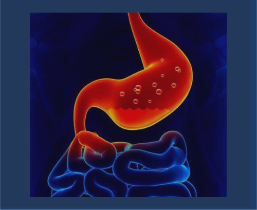
La gastritis es la inflamación de la mucosa gástrica que puede ser aguda o crónica, y afectar de forma difusa o localizada al estómago. Se clasifica según criterios histológicos, etiológicos, endoscópicos y topográficos. No siempre existe correlación entre los hallazgos histológicos, endoscópicos y la sintomatología clínica.
La gastritis se desarrolla cuando se rompe el equilibrio entre los factores agresivos y los mecanismos de defensa de la mucosa gástrica:
1. Factores agresivos:
Infección por Helicobacter pylori
Ácido gástrico y pepsina
AINEs y otros fármacos
Alcohol y tabaco
Reflujo biliar
Estrés físico severo
Radiación
Agentes infecciosos (CMV, HSV, tuberculosis)
2. Mecanismos de defensa:
Barrera mucosa (moco, bicarbonato)
Prostaglandinas citoprotectoras
Adecuado flujo sanguíneo mucoso
Capacidad de regeneración epitelial
Factores de crecimiento
3. Mecanismos patogénicos específicos:
H. pylori: colonización, producción de ureasa, citotoxinas (VacA, CagA), inducción de respuesta inflamatoria
AINEs: inhibición de COX-1 y reducción de prostaglandinas citoprotectoras
Autoinmune: anticuerpos contra células parietales y factor intrínseco
Estrés: isquemia mucosa por vasoconstricción esplácnica
4. Consecuencias histopatológicas:
Infiltración de células inflamatorias (neutrófilos en gastritis aguda, linfocitos y células plasmáticas en crónica)
Daño epitelial (erosiones, úlceras)
Atrofia glandular (en gastritis crónica)
Metaplasia intestinal (en gastritis crónica atrófica)
Gastritis por H. pylori: afecta al 50% de la población mundial, con mayor prevalencia en países en desarrollo (80-90%)
Gastritis por AINEs: 30-50% de usuarios crónicos de AINEs
Gastritis autoinmune: prevalencia 2-5%, más frecuente en mujeres y asociada a otras enfermedades autoinmunes
Gastritis aguda erosiva: común en pacientes críticos (75-100%)
Factores de riesgo: infección por H. pylori, uso crónico de AINEs, consumo excesivo de alcohol, tabaquismo, estrés severo
Síntomas principales:
Gastritis aguda:
Dolor o ardor epigástrico
Náuseas y vómitos
Anorexia
Hemorragia digestiva (hematemesis, melena) en formas erosivas
Fiebre (en gastritis infecciosas)
Gastritis crónica:
Asintomática en muchos casos
Dispepsia no específica (dolor epigástrico, saciedad precoz, distensión)
Anemia ferropénica o megaloblástica (en gastritis atrófica)
Síntomas de enfermedad subyacente
Grupo farmacológico
Fármaco
Dosis
Vía de administración
Frecuencia
Inhibidores de bomba de protones
Omeprazol
20-40 mg
Oral
Cada 12-24 horas
Antagonistas H2
Ranitidina
150-300 mg
Oral
Cada 12 horas
Antiácidos
Hidróxido Al/Mg
10-15 ml
Oral
Después de comidas y al acostarse
Antibióticos (para H. pylori)
Amoxicilina
1000 mg
Oral
Cada 12 horas por 10-14 días
Antibióticos (para H. pylori)
Claritromicina
500 mg
Oral
Cada 12 horas por 10-14 días
Protectores de mucosa
Sucralfato
1 g
Oral
Cada 6 horas
Procinéticos
Domperidona
10 mg
Oral
Antes de comidas principales
Erradicación de H. pylori (triple o cuádruple terapia)
Suspensión de AINEs y otros agentes agresivos
Suplementación con hierro o vitamina B12 en gastritis atrófica
Tratamiento endoscópico en caso de hemorragia
Objetivos dietoterapéuticos:
Reducir la irritación de la mucosa gástrica
Neutralizar la secreción ácida
Promover la cicatrización de la mucosa
Prevenir deficiencias nutricionales
Eliminar alimentos que exacerban los síntomas
Macronutrientes clave:
Proteínas: 0.8-1.0 g/kg/día (de fácil digestión)
Carbohidratos: 50-60% del aporte calórico total
Lípidos: 25-30% del aporte calórico total (limitar grasas saturadas)
Aporte calórico: según requerimientos individuales
Recomendaciones específicas:
Comidas frecuentes y de pequeño volumen (5-6 al día)
Masticación adecuada y comer despacio
Evitar temperaturas extremas de los alimentos
Limitar o evitar irritantes gástricos:
Alcohol
Café (incluso descafeinado)
Bebidas carbonatadas
Alimentos muy condimentados o picantes
Alimentos ácidos (cítricos, tomate)
Chocolate
Menta
Evitar alimentos flatulentos
Mantener adecuada hidratación
Suplementación con hierro o vitamina B12 en gastritis atrófica
Probióticos como coadyuvantes en el tratamiento de H. pylori
Evitar ayunos prolongados
Cena ligera y esperar 2-3 horas antes de acostarse
Úlcera Péptica
La úlcera péptica es una lesión en la mucosa del tracto digestivo que se extiende más allá de la muscularis mucosae, produciendo un defecto local con inflamación activa. Puede localizarse en el estómago (úlcera gástrica), en el duodeno (úlcera duodenal) o, con menor frecuencia, en el esófago o el yeyuno. Se caracteriza por un desequilibrio entre los factores agresivos y los mecanismos de defensa de la mucosa gastroduodenal.
La úlcera péptica se desarrolla por la interacción de varios factores patogénicos:
1. Factores etiológicos principales:
Infección por Helicobacter pylori (responsable del 70-90% de úlceras duodenales y 30-60% de úlceras gástricas)
Uso de AINEs y aspirina (responsable del 15-30% de úlceras gástricas)
2. Mecanismos patogénicos de H. pylori:
Producción de ureasa que genera amonio (neutraliza ácido y daña mucosa)
Citotoxinas (CagA, VacA) que dañan directamente las células epiteliales
Inducción de respuesta inflamatoria con liberación de citocinas
Alteración de la secreción ácida (hipersecreción en úlcera duodenal)
Reducción de somatostatina y aumento de gastrina
3. Mecanismos patogénicos de AINEs:
Inhibición de COX-1 y reducción de prostaglandinas citoprotectoras
Reducción del flujo sanguíneo mucoso
Alteración de la secreción de moco y bicarbonato
Daño directo a la mucosa por efecto tópico
4. Otros factores contribuyentes:
Hipersecreción ácida (síndrome de Zollinger-Ellison)
Tabaquismo
Estrés severo (en pacientes críticos)
Predisposición genética
Duodenitis biliar por reflujo
5. Complicaciones:
Hemorragia digestiva
Perforación
Penetración a órganos adyacentes
Obstrucción pilórica
Malignización (en úlceras gástricas)
Prevalencia global: 5-10% de la población
Relación úlcera duodenal:gástrica = 4:1
Mayor incidencia entre 30-55 años
Ligero predominio en hombres (1.3:1)
Factores de riesgo: infección por H. pylori, uso crónico de AINEs, tabaquismo, antecedentes familiares, grupo sanguíneo O
Tendencia decreciente en países desarrollados (por disminución de prevalencia de H. pylori)
Síntomas principales:
Dolor epigástrico (principal síntoma):
Úlcera duodenal: dolor "en hambre" que mejora con alimentos
Úlcera gástrica: dolor que empeora o no cambia con alimentos
Dispepsia (ardor, distensión, saciedad precoz)
Náuseas y vómitos
Pérdida de peso (más común en úlcera gástrica)
Síntomas de complicaciones:
Hematemesis o melena (hemorragia)
Dolor súbito, intenso y generalizado (perforación)
Vómitos persistentes (obstrucción)
20% pueden ser asintomáticas (especialmente en ancianos)
Grupo farmacológico
Fármaco
Dosis
Vía de administración
Frecuencia
Inhibidores de bomba de protones
Omeprazol
20-40 mg
Oral
Cada 12-24 horas
Antibióticos (para H. pylori)
Amoxicilina
1000 mg
Oral
Cada 12 horas por 10-14 días
Antibióticos (para H. pylori)
Claritromicina
500 mg
Oral
Cada 12 horas por 10-14 días
Antibióticos (para H. pylori)
Metronidazol
500 mg
Oral
Cada 12 horas por 10-14 días
Protectores de mucosa
Sucralfato
1 g
Oral
Cada 6 horas
Sales de bismuto
Subsalicilato de bismuto
120 mg/ml, 30 ml
Oral
Cada 6 horas
Erradicación de H. pylori (triple o cuádruple terapia)
Suspensión de AINEs cuando sea posible
Tratamiento endoscópico en caso de hemorragia
Cirugía en complicaciones (perforación, hemorragia no controlable endoscópicamente)
Objetivos dietoterapéuticos:
Reducir la estimulación de secreción ácida
Neutralizar el ácido gástrico
Proteger la mucosa gastroduodenal
Favorecer la cicatrización de la úlcera
Prevenir recidivas
Macronutrientes clave:
Proteínas: 1.0-1.2 g/kg/día (preferentemente de fácil digestión)
Carbohidratos: 50-60% del aporte calórico total
Lípidos: 25-30% del aporte calórico total
Aporte calórico: según requerimientos individuales
Recomendaciones específicas:
Comidas frecuentes y de pequeño volumen (5-6 al día)
Masticación adecuada y comer despacio
Evitar ayunos prolongados
Limitar o evitar irritantes gástricos:
Alcohol
Café y bebidas con cafeína
Bebidas carbonatadas
Alimentos muy condimentados o picantes
Alimentos ácidos en fase aguda
Evitar alimentos que aumenten la secreción ácida:
Carnes rojas en exceso
Caldos de carne concentrados
Extractos de carne
Evitar temperaturas extremas de los alimentos
Limitar el consumo de alimentos flatulentos
Cena ligera y esperar 2-3 horas antes de acostarse
Abandono del tabaco
Moderar el consumo de alimentos ricos en grasas
No existen "dietas blandas" específicas con evidencia científica
Enfermedad por Reflujo Gastroesofágico (ERGE)
La enfermedad por reflujo gastroesofágico (ERGE) es una condición que se desarrolla cuando el contenido gástrico refluye hacia el esófago causando síntomas molestos y/o complicaciones. Se define clínicamente como la presencia de síntomas o lesiones esofágicas causadas por el reflujo anormal de contenido gástrico al esófago. La ERGE puede presentarse con síntomas típicos (pirosis, regurgitación), atípicos (tos crónica, asma) o complicaciones (esofagitis, esófago de Barrett).
La ERGE se produce por un desequilibrio entre factores defensivos y agresivos:
1. Mecanismos fisiopatológicos principales:
Incompetencia del esfínter esofágico inferior (EEI):
Relajaciones transitorias inapropiadas del EEI
Hipotonía basal del EEI (<10 mmHg)
Aumento de presión intraabdominal (obesidad, embarazo)
Alteración del aclaramiento esofágico:
Disminución de la peristalsis esofágica
Reducción de la producción de saliva (neutraliza ácido)
Retraso del vaciamiento gástrico
Hernia hiatal (altera la barrera anatómica antirreflujo)
2. Factores agresivos:
Ácido clorhídrico
Pepsina
Sales biliares y enzimas pancreáticas (en reflujo duodenogástrico)
3. Factores defensivos:
Barrera antirreflujo (EEI, ligamento frenoesofágico, ángulo de His)
Cirugía antirreflujo (fundoplicatura) en casos refractarios o con complicaciones
Objetivos dietoterapéuticos:
Reducir los síntomas de reflujo
Disminuir la exposición esofágica al ácido
Promover el vaciamiento gástrico
Reducir la presión intraabdominal
Mejorar la calidad de vida
Macronutrientes clave:
Proteínas: 15-20% del aporte calórico total
Carbohidratos: 50-55% del aporte calórico total
Lípidos: 25-30% del aporte calórico total (limitar grasas saturadas)
Aporte calórico: ajustado para mantener peso saludable
Recomendaciones específicas:
Reducción de peso en pacientes con sobrepeso u obesidad
Comidas frecuentes y de pequeño volumen (5-6 al día)
Evitar acostarse hasta 2-3 horas después de las comidas
Elevar la cabecera de la cama (15-20 cm)
Limitar o evitar alimentos que relajan el EEI:
Chocolate
Menta
Alimentos grasos
Alcohol
Café y bebidas con cafeína
Cítricos y tomate
Bebidas carbonatadas
Alimentos muy condimentados
Evitar comidas copiosas, especialmente en la cena
Masticación adecuada y comer despacio
Limitar el volumen de líquidos durante las comidas
Evitar ropa ajustada en abdomen
Abandono del tabaco
Individualizar la dieta según tolerancia personal
Diarrea
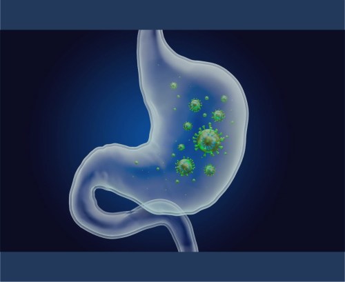
La diarrea se define como el aumento en la frecuencia, fluidez y/o volumen de las deposiciones en relación con el hábito intestinal normal de cada persona. Operacionalmente, se considera diarrea cuando hay más de 3 deposiciones al día de consistencia disminuida o un volumen fecal superior a 200 g/día. Se clasifica según su duración en aguda (<14 días), persistente (14-30 días) y crónica (>30 días), y según su mecanismo fisiopatológico en osmótica, secretora, exudativa o por alteración de la motilidad.
La diarrea se produce por diversos mecanismos fisiopatológicos:
1. Diarrea osmótica:
Presencia de solutos no absorbibles en la luz intestinal
Arrastre osmótico de agua hacia la luz intestinal
Causas: malabsorción de carbohidratos (lactosa), uso de laxantes osmóticos, síndrome de dumping
Características: cesa con el ayuno, osmolaridad fecal aumentada
2. Diarrea secretora:
Secreción activa de electrolitos y agua hacia la luz intestinal
Identificación y exclusión de alimentos desencadenantes
Dieta específica según etiología:
Intolerancia a lactosa: restricción de lácteos o uso de productos sin lactosa
Enfermedad celíaca: dieta sin gluten
Malabsorción de grasas: triglicéridos de cadena media
Enfermedad inflamatoria intestinal: dieta antiinflamatoria, baja en FODMAP según caso
Suplementación con vitaminas y minerales si hay deficiencias
Probióticos específicos según etiología
Adecuada hidratación
Estreñimiento
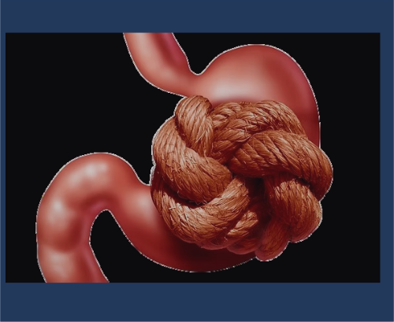
El estreñimiento es un trastorno digestivo caracterizado por una disminución en la frecuencia de las deposiciones, aumento en la consistencia de las heces y/o dificultad para su evacuación. Según los criterios Roma IV, se define como la presencia de dos o más de los siguientes síntomas, durante al menos 3 meses: menos de 3 deposiciones por semana, esfuerzo excesivo en más del 25% de las deposiciones, heces duras en más del 25% de las deposiciones, sensación de evacuación incompleta, sensación de obstrucción anorrectal, y/o necesidad de maniobras manuales para facilitar la defecación.
El estreñimiento puede desarrollarse por diversos mecanismos:
1. Estreñimiento de tránsito normal:
Percepción alterada de la función intestinal
Umbral sensorial rectal elevado
Función motora colónica normal
Asociado frecuentemente a síndrome de intestino irritable
2. Estreñimiento de tránsito lento:
Disminución de la actividad propulsiva colónica
Reducción de las contracciones de alta amplitud
Alteraciones en los plexos mientéricos
Disminución de células intersticiales de Cajal
Neuropatía o miopatía colónica
3. Disfunción del suelo pélvico (disinergia defecatoria):
Contracción paradójica o relajación inadecuada del esfínter anal externo durante el intento de defecación
Alteración de la coordinación rectoanal
Descenso perineal inadecuado
Rectocele, enterocele u otras alteraciones anatómicas
Limitar alimentos formadores de gases si causan molestias
Técnicas de relajación para reducir el estrés
Enfermedad Celíaca
La enfermedad celíaca (EC) es un trastorno sistémico de base inmunológica, desencadenado por la ingesta de gluten y prolaminas relacionadas en individuos genéticamente susceptibles. Se caracteriza por la presencia de manifestaciones clínicas variables, anticuerpos específicos, haplotipos HLA-DQ2 y/o DQ8, y enteropatía. El gluten es una proteína presente en trigo, cebada, centeno y, en menor medida, en avena.
La enfermedad celíaca se desarrolla a través de una compleja interacción entre factores genéticos, ambientales e inmunológicos:
1. Factores genéticos:
Presencia de haplotipos HLA-DQ2 (90-95% de pacientes) y/o HLA-DQ8 (5-10%)
Genes no-HLA que contribuyen a la susceptibilidad
2. Factores ambientales:
Gluten: principal desencadenante
Infecciones gastrointestinales
Alteraciones en microbiota intestinal
Introducción temprana o tardía del gluten en la dieta
3. Mecanismos inmunológicos:
Digestión incompleta de péptidos de gliadina
Aumento de permeabilidad intestinal (papel de zonulina)
Transglutaminasa tisular 2 (TG2) que deamida péptidos de gliadina
Presentación de péptidos modificados por células presentadoras de antígenos
Activación de linfocitos T CD4+ específicos
Respuesta inmune adaptativa con producción de citocinas proinflamatorias (IFN-γ, IL-15)
Respuesta humoral con producción de anticuerpos (anti-TG2, anti-endomisio, anti-péptidos deamidados de gliadina)
Activación de linfocitos intraepiteliales citotóxicos
4. Daño intestinal:
Atrofia de vellosidades intestinales
Hiperplasia de criptas
Infiltración linfocitaria intraepitelial
Alteración de la función absortiva intestinal
Prevalencia global: 1-1.5% de la población
Relación mujer:hombre = 2-3:1
Mayor prevalencia en familiares de primer grado (10-15%)
Concordancia en gemelos monocigotos: 75-80%
Asociación con otras enfermedades autoinmunes: diabetes tipo 1, tiroiditis autoinmune, hepatitis autoinmune
Asociación con trastornos genéticos: síndrome de Down, síndrome de Turner, déficit selectivo de IgA
Presentación clásica (cada vez menos frecuente):
Diarrea crónica
Distensión abdominal
Pérdida de peso
Retraso del crecimiento en niños
Malnutrición
Presentación no clásica (más frecuente actualmente):
Dolor abdominal recurrente
Estreñimiento
Anemia ferropénica refractaria
Osteopenia/osteoporosis
Infertilidad, abortos recurrentes
Aftas orales recurrentes
Dermatitis herpetiforme
Hipertransaminasemia
Ataxia, neuropatía periférica
Cefalea, fatiga crónica
Grupos de riesgo (cribado recomendado):
Familiares de primer grado
Enfermedades autoinmunes asociadas
Síndrome de Down, Turner, Williams
Déficit selectivo de IgA
No existe tratamiento farmacológico específico aprobado. El tratamiento principal es la dieta estricta sin gluten de por vida.
Tratamiento de deficiencias nutricionales:
Grupo farmacológico
Fármaco
Dosis
Vía de administración
Frecuencia
Suplementos de hierro
Sulfato ferroso
105 mg
Oral
1-3 veces/día
Suplementos de calcio
Carbonato de calcio
500-1000 mg
Oral
1-2 veces/día
Suplementos de vitamina D
Colecalciferol
800-1000 UI
Oral
Diaria
Suplementos de ácido fólico
Ácido fólico
1-5 mg
Oral
Diaria
Suplementos de vitamina B12
Cianocobalamina
1000 μg
Oral/IM
Diaria/Mensual
Seguimiento periódico clínico, serológico y endoscópico
Tratamientos experimentales en investigación: inhibidores de zonulina, enzimas degradadoras de gluten, inmunomoduladores
Objetivos dietoterapéuticos:
Eliminar completamente el gluten de la dieta
Corregir deficiencias nutricionales
Recuperar la estructura y función intestinal
Prevenir complicaciones a largo plazo
Mantener un estado nutricional óptimo
Macronutrientes clave:
Proteínas: 15-20% del aporte calórico total
Carbohidratos: 50-55% del aporte calórico total (sin gluten)
Lípidos: 30-35% del aporte calórico total
Aporte calórico: según requerimientos individuales
Recomendaciones específicas:
Dieta estricta sin gluten de por vida:
Eliminar trigo, cebada, centeno y derivados
Precaución con avena (solo certificada sin gluten)
Leer etiquetas de alimentos procesados
Evitar contaminación cruzada
Alimentos naturalmente sin gluten:
Arroz, maíz, patata, tapioca
Quinoa, amaranto, mijo, trigo sarraceno
Legumbres
Frutas y verduras
Carnes, pescados, huevos, lácteos sin aditivos
Suplementación nutricional según deficiencias:
Hierro
Calcio y vitamina D
Ácido fólico
Vitamina B12
Zinc
Educación nutricional:
Identificación de fuentes ocultas de gluten
Técnicas de preparación de alimentos
Lectura de etiquetas
Manejo en situaciones sociales y viajes
Seguimiento por dietista-nutricionista especializado
Evaluación periódica del estado nutricional
Participación en grupos de apoyo
Colitis Ulcerativa
La colitis ulcerativa (CU) es una enfermedad inflamatoria intestinal crónica idiopática que afecta la mucosa del colon de forma continua, comenzando en el recto y extendiéndose proximalmente hasta una extensión variable. Se caracteriza por un curso recurrente de remisiones y exacerbaciones, con inflamación difusa limitada a la mucosa y submucosa, sin granulomas, que causa friabilidad, erosiones y úlceras.
La colitis ulcerativa se desarrolla por una compleja interacción entre factores genéticos, ambientales e inmunológicos:
1. Factores genéticos:
Más de 200 loci de susceptibilidad identificados
Genes implicados en barrera epitelial, inmunidad innata y adaptativa
Polimorfismos en IL-23R, JAK2, STAT3, entre otros
2. Factores ambientales:
Tabaquismo (factor protector, empeoramiento al abandonarlo)
Apendicectomía (factor protector)
Dieta occidental (alta en grasas saturadas, azúcares refinados)
Antibióticos y alteración de microbiota intestinal
Estrés psicológico
3. Mecanismos inmunológicos:
Alteración de la barrera epitelial intestinal
Disbiosis de la microbiota intestinal
Respuesta inmune innata anormal
Activación de células dendríticas y macrófagos
Predominio de respuesta Th2 (IL-4, IL-5, IL-13) y Th17
Producción de citocinas proinflamatorias (TNF-α, IL-6, IL-1β)
Reclutamiento de neutrófilos y formación de criptoabscesos
Autoanticuerpos (pANCA)
4. Daño tisular:
Inflamación superficial limitada a mucosa y submucosa
Infiltración de neutrófilos en la lámina propia y epitelio
Depleción de células caliciformes
Distorsión de criptas y abscesos crípticos
Úlceras superficiales que confluyen
Regeneración epitelial aberrante
Incidencia: 10-20 casos por 100,000 habitantes/año en países occidentales
Prevalencia: 100-200 casos por 100,000 habitantes
Distribución bimodal por edad: pico principal entre 15-30 años, segundo pico entre 50-70 años
Ligero predominio en hombres
Mayor prevalencia en países desarrollados, población urbana y climas nórdicos
Riesgo aumentado en familiares de primer grado (10-15%)
Asociación con espondilitis anquilosante, colangitis esclerosante primaria
Rectorragia (síntoma cardinal)
Diarrea con moco
Tenesmo rectal
Urgencia defecatoria
Dolor abdominal tipo cólico en hipogastrio o fosa ilíaca izquierda
Cirugía (colectomía) en casos refractarios o complicaciones
Objetivos dietoterapéuticos:
Corregir y prevenir la desnutrición
Reducir la inflamación intestinal
Controlar los síntomas durante los brotes
Reponer pérdidas de nutrientes
Mejorar la calidad de vida
Macronutrientes clave:
Proteínas: 1.2-1.5 g/kg/día (mayor en brotes y desnutrición)
Carbohidratos: 50-55% del aporte calórico total
Lípidos: 30-35% del aporte calórico total (énfasis en omega-3)
Aporte calórico: 30-35 kcal/kg/día (ajustar según actividad y estado nutricional)
Recomendaciones específicas:
Durante brotes:
Dieta baja en residuos y fibra insoluble
Evitar lácteos si hay intolerancia a lactosa secundaria
Comidas frecuentes y de pequeño volumen
Adecuada hidratación
Limitar alimentos estimulantes del peristaltismo
Considerar fórmulas enterales específicas en casos graves
En remisión:
Dieta equilibrada y variada
Reintroducción progresiva de fibra soluble
Identificación y exclusión de alimentos mal tolerados
Valorar dieta antiinflamatoria (mediterránea)
Adecuada ingesta de calcio y vitamina D
Suplementación según deficiencias:
Hierro (preferentemente intravenoso en anemia)
Zinc
Vitaminas liposolubles (A, D, E, K)
Ácido fólico
Vitamina B12
Probióticos específicos (evidencia limitada)
Valoración nutricional periódica
Educación nutricional personalizada
Enfermedad de Crohn
La enfermedad de Crohn (EC) es una enfermedad inflamatoria intestinal crónica idiopática que puede afectar cualquier segmento del tracto digestivo desde la boca hasta el ano, de forma discontinua (parcheada), transmural (afecta todas las capas de la pared intestinal) y con tendencia a la formación de estenosis, fístulas y abscesos. Se caracteriza por un curso crónico con períodos de actividad y remisión.
La enfermedad de Crohn se desarrolla por una compleja interacción entre factores genéticos, ambientales e inmunológicos:
1. Factores genéticos:
Más de 200 loci de susceptibilidad identificados
Gen NOD2/CARD15 (primer gen identificado, asociado a EC ileal)
Genes implicados en autofagia (ATG16L1, IRGM)
Genes de la vía IL-23/Th17 (IL23R)
Genes de barrera epitelial (XBP1, MUC19)
2. Factores ambientales:
Tabaquismo (factor de riesgo y agravante)
Dieta occidental (alta en grasas saturadas, azúcares refinados)
Antibióticos y alteración de microbiota intestinal
Infecciones gastrointestinales previas
Estrés psicológico
Contaminantes ambientales
3. Mecanismos inmunológicos:
Alteración de la barrera epitelial intestinal
Disbiosis de la microbiota intestinal
Defectos en la inmunidad innata (reconocimiento bacteriano, autofagia)
Predominio de respuesta Th1 (IFN-γ, TNF-α) y Th17
Producción excesiva de citocinas proinflamatorias
Alteración en la resolución de la inflamación
Formación de granulomas no caseificantes
4. Daño tisular:
Inflamación transmural
Úlceras profundas y fisuras
Engrosamiento de la pared intestinal ("empedrado")
Fibrosis y estenosis
Formación de fístulas y abscesos
Granulomas no caseificantes (50-60% de los casos)
Incidencia: 5-10 casos por 100,000 habitantes/año en países occidentales
Prevalencia: 50-200 casos por 100,000 habitantes
Distribución bimodal por edad: pico principal entre 15-30 años, segundo pico entre 50-70 años
Ligero predominio en mujeres
Mayor prevalencia en países desarrollados, población urbana y climas nórdicos
Riesgo aumentado en familiares de primer grado (10-15%)
Mayor prevalencia en población caucásica y judía ashkenazi
Varía según la localización y el patrón de la enfermedad:
Síntomas intestinales:
Dolor abdominal (síntoma más frecuente)
Diarrea crónica (con o sin sangre)
Pérdida de peso
Fiebre
Masa abdominal palpable
Enfermedad perianal (fisuras, fístulas, abscesos)
Manifestaciones extraintestinales (30% de pacientes):
Mayor riesgo de cáncer colorrectal y de intestino delgado
Grupo farmacológico
Fármaco
Dosis
Vía de administración
Frecuencia
Corticosteroides
Prednisona
40-60 mg
Oral
Diaria con pauta descendente
Corticosteroides
Budesonida
9 mg
Oral
Diaria
Inmunomoduladores
Azatioprina
2-2.5 mg/kg
Oral
Diaria
Inmunomoduladores
Metotrexato
15-25 mg
Oral/Subcutánea
Semanal
Biológicos anti-TNF
Infliximab
5 mg/kg
Intravenosa
Semanas 0, 2, 6 y cada 8 semanas
Biológicos anti-TNF
Adalimumab
160/80/40 mg
Subcutánea
Semanas 0, 2 y cada 2 semanas
Biológicos anti-integrinas
Vedolizumab
300 mg
Intravenosa
Semanas 0, 2, 6 y cada 8 semanas
Biológicos anti-IL12/23
Ustekinumab
390/520/780 mg según peso
Intravenosa (inducción)
Dosis única inicial
Biológicos anti-IL12/23
Ustekinumab
90 mg
Subcutánea (mantenimiento)
Cada 8-12 semanas
Antibióticos
Metronidazol
500 mg
Oral
Cada 8 horas
Antibióticos
Ciprofloxacino
500 mg
Oral
Cada 12 horas
Tratamiento escalonado según gravedad, localización y patrón
Tratamiento de inducción y mantenimiento
Cirugía en complicaciones (estenosis, fístulas, abscesos) o refractariedad
Combinación de terapias en casos complejos
Objetivos dietoterapéuticos:
Corregir y prevenir la desnutrición
Reducir la inflamación intestinal
Manejar los síntomas obstructivos
Reponer pérdidas de nutrientes
Mejorar la calidad de vida
Promover el crecimiento y desarrollo en niños
Macronutrientes clave:
Proteínas: 1.2-1.5 g/kg/día (mayor en brotes y desnutrición)
Carbohidratos: 50-55% del aporte calórico total
Lípidos: 30-35% del aporte calórico total (énfasis en omega-3)
Aporte calórico: 30-35 kcal/kg/día (ajustar según actividad y estado nutricional)
Recomendaciones específicas:
Durante brotes:
Nutrición enteral exclusiva (especialmente en niños)
Dieta baja en residuos y fibra insoluble
Evitar lácteos si hay intolerancia a lactosa secundaria
Comidas frecuentes y de pequeño volumen
Adecuada hidratación
En patrón estenosante:
Dieta de bajo residuo estricta
Evitar alimentos fibrosos, con semillas o piel
Texturas blandas o purés
Considerar fórmulas enterales oligoméricas
En remisión:
Dieta equilibrada y variada
Reintroducción progresiva de fibra soluble
Identificación y exclusión de alimentos mal tolerados
Valorar dieta de exclusión específica (CDED, IBD-AID, baja en FODMAP)
Suplementación según deficiencias:
Hierro (preferentemente intravenoso en anemia)
Zinc
Vitaminas liposolubles (A, D, E, K)
Vitamina B12 (en resección o enfermedad ileal)
Calcio y vitamina D
Ácido fólico (especialmente si toma metotrexato)
Valoración nutricional periódica
Educación nutricional personalizada
Soporte nutricional especializado en casos complejos
Síndrome de Intestino Irritable
El síndrome de intestino irritable (SII) es un trastorno funcional digestivo crónico caracterizado por dolor o malestar abdominal recurrente asociado a alteraciones en el hábito intestinal (diarrea, estreñimiento o alternancia), en ausencia de anomalías estructurales o bioquímicas detectables. Según los criterios Roma IV, se define como dolor abdominal recurrente, al menos 1 día a la semana en los últimos 3 meses, asociado a dos o más de los siguientes criterios: relación con la defecación, cambio en la frecuencia de las deposiciones y/o cambio en la forma de las heces.
El SII es un trastorno multifactorial con diversos mecanismos fisiopatológicos:
1. Alteración de la motilidad intestinal:
Patrones anormales de contracciones intestinales
Tránsito acelerado (SII-diarrea) o enlentecido (SII-estreñimiento)
Respuesta motora exagerada a estímulos (comida, estrés)
2. Hipersensibilidad visceral:
Umbral disminuido para la percepción de estímulos intestinales
Hiperalgesia visceral (respuesta aumentada al dolor)
Alodinia (percepción dolorosa de estímulos normalmente no dolorosos)
Alteración en procesamiento central del dolor
3. Alteración del eje cerebro-intestino:
Comunicación bidireccional alterada entre SNC y sistema nervioso entérico
Respuesta anormal al estrés
Alteraciones en neurotransmisores (serotonina, sustancia P)
Activación anormal del sistema nervioso autónomo
4. Inflamación de bajo grado:
Aumento de mastocitos y células inflamatorias en mucosa
Carbohidratos: atención a carbohidratos fermentables (FODMAPs)
Lípidos: moderación en grasas (especialmente en SII-D)
Aporte calórico: según requerimientos individuales
Recomendaciones específicas:
Recomendaciones generales:
Comidas regulares y no saltarse comidas
Comer despacio y masticar bien
Evitar exceso de alimentos grasos
Limitar alcohol y cafeína
Adecuada hidratación
Tamaño de comidas moderado
Dieta baja en FODMAPs:
Restricción temporal (4-6 semanas) de alimentos ricos en FODMAPs:
Oligosacáridos: trigo, cebolla, ajo, legumbres
Disacáridos: lactosa (leche, yogur)
Monosacáridos: fructosa en exceso (miel, mango)
Polioles: sorbitol, manitol (chicles sin azúcar, algunas frutas)
Reintroducción sistemática para identificar tolerancia individual
Supervisión por dietista-nutricionista
Según subtipo predominante:
SII-E: aumento gradual de fibra soluble, adecuada hidratación
SII-D: moderación en fibra insoluble, alimentos astringentes
SII-M: ajuste individualizado según predominio sintomático
Probióticos específicos (cepas seleccionadas)
Diario dietético para identificar desencadenantes individuales
Educación nutricional personalizada
Valorar intolerancia a lactosa, fructosa o gluten no celíaco
Síndrome de Intestino Corto (SIC)
El síndrome de intestino corto es un cuadro clínico caracterizado por la incapacidad para mantener el balance energético, proteico, hidroelectrolítico y de micronutrientes mediante una dieta convencional, debido a una resección quirúrgica extensa, defectos congénitos o pérdida funcional del intestino delgado. Se considera síndrome de intestino corto cuando queda menos de 150-200 cm de intestino delgado funcional en adultos.
Pérdida de superficie absortiva:
Reducción significativa de la longitud intestinal disminuye la absorción de nutrientes, líquidos y electrolitos.
Hipersecreción gástrica:
Aumento de ácido gástrico que agrava la diarrea y malabsorción.
Alteración motora:
Tránsito intestinal acelerado reduce tiempo de contacto para absorción.
Adaptación intestinal:
El intestino remanente se hipertrofia y aumenta su capacidad funcional, proceso que puede tardar meses o años.
Sobrecrecimiento bacteriano:
Favorece inflamación y malabsorción.
Complicaciones metabólicas:
Deficiencias vitamínicas y minerales, osteoporosis, alteraciones hidroelectrolíticas y complicaciones derivadas de nutrición parenteral prolongada.
Incidencia estimada de 2 a 5 casos por millón.
Más frecuente en mujeres.
Causas principales en adultos: enfermedad de Crohn, isquemia mesentérica, traumatismos, enteritis por radiación.
En niños: malformaciones congénitas, enterocolitis necrotizante, atresias intestinales.
La severidad y pronóstico dependen de la longitud y segmento intestinal remanente, presencia de colon y válvula ileocecal.
Diarrea crónica, voluminosa y esteatorrea.
Dolor y distensión abdominal, gases.
Pérdida de peso y desnutrición.
Fatiga, debilidad y edema por hipoalbuminemia.
Deficiencias de vitaminas liposolubles, minerales y electrolitos.
En niños, retraso en crecimiento y desarrollo.
Complicaciones de nutrición parenteral: infecciones, enfermedad hepática, cálculos biliares.
Grupo farmacológico / Intervención
Fármaco / Descripción
Dosis / Especificaciones
Vía de administración
Frecuencia / Duración
Indicaciones y notas
Antidiarreicos
Loperamida, difenoxilato con atropina
Dosis ajustada para reducir motilidad intestinal y pérdidas por diarrea
Oral
Según necesidad
Reduce tránsito intestinal y pérdidas líquidas.
Inhibidores de secreción gástrica
Antagonistas H2 (ranitidina), IBP (omeprazol)
Tratamiento mínimo 6 meses para controlar hipersecreción gástrica
Oral
Diario
Disminuyen acidez gástrica, mejoran absorción y reducen diarrea.
Análogos de somatostatina
Octreótido
Usado si gasto >3 litros/24h; dosis variable según respuesta
Subcutánea / IV
Diario
Reduce secreciones digestivas y pérdidas por estomas de alto débito.
Según déficit; magnesio 12 mmol/24 h oral; vitamina D 0.25-0.29 µg diarios
Oral / IV
Diario
Corrige deficiencias y previene osteoporosis y complicaciones metabólicas.
Antibióticos para sobrecrecimiento bacteriano
Metronidazol, tetraciclina
Ciclos de 10-14 días; profilaxis 7-14 días al mes; rotación en tratamientos prolongados
Oral
Según esquema
Controlan sobrecrecimiento bacteriano que agrava malabsorción y diarrea.
Control de líquidos y electrolitos
Restricción líquidos hipotónicos (<500 ml/día), soluciones de rehidratación oral isotónicas
Separar ingesta de líquidos y sólidos (no beber durante comidas)
Oral
Continuo
Previene deshidratación y sobrecarga hídrica.
Nutrición parenteral y enteral
Nutrición parenteral total o parcial según longitud intestinal remanente
Nutrición parenteral domiciliaria en <100 cm yeyuno o colon no funcional; apoyo enteral cuando posible
IV / Oral / Enteral
Según evolución clínica
Mantiene estado nutricional, previene malnutrición y estimula adaptación intestinal.
Objetivos dietoterapéuticos:
Mantener o mejorar el estado nutricional.
Favorecer la adaptación intestinal y mejorar la absorción.
Prevenir y corregir deficiencias nutricionales.
Controlar la diarrea y mejorar la tolerancia alimentaria.
Macronutrientes clave:
Carbohidratos complejos para energía sostenida.
Proteínas de alta calidad para reparación tisular (1.2-1.5 g/kg/día).
Grasas preferiblemente de cadena media para mejor absorción y menor efecto laxante.
Control de grasas saturadas y azúcares simples para evitar diarrea osmótica.
Recomendaciones específicas:
Dieta fraccionada en 5-6 comidas pequeñas al día.
Separar ingesta de líquidos y sólidos (no beber líquidos durante las comidas).
Dieta baja en fibra insoluble y controlada en lactosa si hay intolerancia secundaria.
Dieta baja en oxalatos para prevenir nefrolitiasis en pacientes con colon remanente.
Suplementación con vitaminas liposolubles (A, D, E, K), vitamina B12, ácido fólico, calcio, magnesio, zinc y hierro según déficit.
Hidratación adecuada con soluciones isotónicas, limitando líquidos hipotónicos.
Introducción gradual de fibra soluble para mejorar función intestinal.
Hepatitis
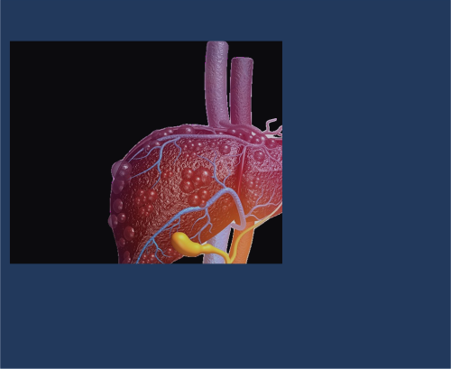
La hepatitis es la inflamación del hígado, que puede ser causada por infecciones virales, consumo excesivo de alcohol, toxinas, medicamentos o enfermedades autoinmunes. La inflamación daña el hígado y puede afectar su función normal. Puede presentarse como hepatitis aguda (de corta duración) o crónica (persistente a largo plazo).
Hepatitis viral:
Causada por virus hepatotrópicos (A, B, C, D, E), que infectan las células hepáticas y desencadenan inflamación.
Hepatitis alcohólica:
Daño hepático por consumo excesivo y prolongado de alcohol, que genera inflamación y necrosis.
Hepatitis tóxica:
Causada por fármacos, productos químicos o suplementos que lesionan el hígado.
Hepatitis autoinmune:
El sistema inmunitario ataca las células hepáticas, causando inflamación crónica.
La inflamación puede ser aguda o crónica, con daño progresivo que lleva a fibrosis, cirrosis y riesgo de carcinoma hepatocelular.
La hepatitis viral es la causa más común.
En 2022, la OMS estimó 254 millones de personas con hepatitis B crónica y 50 millones con hepatitis C.
La hepatitis A y E se transmiten por vía fecal-oral, principalmente por alimentos o agua contaminados.
La hepatitis B, C y D se transmiten por contacto con sangre o fluidos corporales infectados.
La hepatitis B afecta más a hombres (58%) y es prevalente en adultos jóvenes de 30 a 54 años.
La hepatitis A y B cuentan con vacuna; para hepatitis C no existe vacuna.
Fase prodrómica o preictérica:
Anorexia intensa, malestar general, náuseas, vómitos, fiebre, dolor en hipocondrio derecho, aversión al tabaco en fumadores.
Fase ictérica:
Orina oscura, ictericia, desaparición parcial de síntomas sistémicos, hepatomegalia con sensibilidad y esplenomegalia leve en algunos casos.
Fase de recuperación:
Desaparición progresiva de la ictericia en 2-4 semanas.
En hepatitis crónica:
Puede ser asintomática o presentar fatiga, malestar, signos de insuficiencia hepática y complicaciones como hipertensión portal, ascitis, encefalopatía, varices esofágicas, y riesgo de carcinoma hepatocelular.
Grupo farmacológico
Fármaco
Dosis
Vía de administración
Frecuencia
Indicaciones y notas
Antivirales para hepatitis B
Interferón alfa
5-10 millones de UI, subcutáneo
Subcutánea
3 veces por semana o diario
Tratamiento estándar en hepatitis B crónica con replicación viral activa y enfermedad hepática activa.
Antivirales para hepatitis B
Lamivudina
100 mg
Oral
Diario
Inhibe replicación viral; se mantiene hasta seroconversión del HBeAg.
Antivirales para hepatitis C
Antivirales de acción directa (sofosbuvir, ledipasvir, etc.)
Según protocolo específico
Oral
Diario
Tratamiento curativo para hepatitis C con altas tasas de respuesta.
Proteínas: 1-1.2 g/kg/día en hepatitis compensada; ajustar en encefalopatía hepática.
Carbohidratos: 50-60% del aporte calórico total.
Grasas: 25-30%, preferir triglicéridos de cadena media si hay malabsorción.
Recomendaciones específicas:
Restricción moderada de sodio (máximo 2.5 g/día) para controlar ascitis.
Suplementación de vitaminas liposolubles (A, D, E, K) en caso de malabsorción.
Suplementos de zinc y selenio pueden mejorar metabolismo y función hepática.
Evitar alcohol y hepatotóxicos.
Dieta fraccionada en comidas pequeñas y frecuentes.
En casos de encefalopatía, restricción proteica temporal y control de amoníaco.
Cirrosis hepática
La cirrosis hepática es una enfermedad crónica avanzada del hígado caracterizada por fibrosis extensa y formación de nódulos regenerativos que distorsionan la arquitectura hepática normal. Esta remodelación altera la función hepática y puede conducir a insuficiencia hepática y complicaciones asociadas.
La cirrosis resulta de una lesión hepática crónica y persistente que induce inflamación y fibrosis progresiva.
La fibrosis es causada por la activación de células estrelladas hepáticas que producen colágeno y matriz extracelular, formando tejido cicatricial.
Simultáneamente, hay proliferación de hepatocitos formando nódulos regenerativos rodeados por tejido fibroso.
La angiogénesis genera nuevos vasos sanguíneos dentro de la fibrosis, alterando el flujo sanguíneo hepático y aumentando la presión en la vena porta (hipertensión portal).
La distorsión vascular y estructural reduce la perfusión hepática y la capacidad funcional del hígado.
La progresión depende de la causa subyacente, la magnitud del daño y la respuesta individual.
La cirrosis es una causa importante de morbilidad y mortalidad mundial.
En países desarrollados, las causas más frecuentes son hepatitis C, hepatopatía alcohólica y esteatohepatitis no alcohólica (EHNA).
A nivel global, hepatitis B y C son las causas predominantes.
Otras causas incluyen hepatitis autoinmune, colangitis biliar primaria, hemocromatosis, enfermedad de Wilson y toxicidad por fármacos.
En España, afecta aproximadamente a 4 de cada 10,000 personas, con predominio en hombres y relación con consumo excesivo de alcohol.
En etapas tempranas puede ser asintomática o presentar síntomas inespecíficos: fatiga, debilidad, pérdida de apetito.
Signos de insuficiencia hepática: ictericia, ascitis, edema periférico, encefalopatía hepática, hemorragias por coagulopatía.
Manifestaciones de hipertensión portal: varices esofágicas, esplenomegalia, hemorragias digestivas.
En fases avanzadas, insuficiencia hepática y fallo multiorgánico.
Grupo farmacológico
Fármaco
Dosis
Vía de administración
Frecuencia
Indicaciones y notas
Diuréticos
Espironolactona
100-400 mg/día
Oral
Diario
Control de ascitis y edema.
Diuréticos
Furosemida
40-160 mg/día
Oral
Diario
Uso combinado con espironolactona para manejo de retención de líquidos.
Beta-bloqueantes no selectivos
Propranolol
20-40 mg dos veces al día
Oral
Diario
Prevención de hemorragia por varices esofágicas.
Lactulosa
Lactulosa
15-30 ml cada 8-12 horas
Oral
Según necesidad
Tratamiento y prevención de encefalopatía hepática.
Antibióticos
Rifaximina
550 mg dos veces al día
Oral
Según indicación
Prevención de encefalopatía hepática recurrente.
Vitamina K
Fitomenadiona
Según déficit
Oral / IM
Según indicación
Corrección de coagulopatía.
Manejo de complicaciones: paracentesis para ascitis refractaria, endoscopia para varices, trasplante hepático en casos avanzados.
Objetivos dietoterapéuticos:
Mantener o mejorar el estado nutricional.
Controlar retención de líquidos y ascitis.
Prevenir encefalopatía hepática.
Reponer deficiencias vitamínicas y minerales.
Macronutrientes clave:
Proteínas: 1.2-1.5 g/kg/día, evitando restricción innecesaria para prevenir sarcopenia.
Carbohidratos: 50-60% del aporte calórico total.
Grasas: 25-30%, preferir grasas insaturadas.
Recomendaciones específicas:
Restricción moderada de sodio (<2 g/día) para controlar ascitis y edema.
Fraccionar la alimentación en 4-6 comidas diarias.
Suplementar vitaminas liposolubles (A, D, E, K) y complejo B.
Controlar ingesta hídrica según presencia de hiponatremia o ascitis.
Evitar alcohol y hepatotóxicos.
Evaluar y tratar deficiencias de zinc y selenio.
Colecistitis
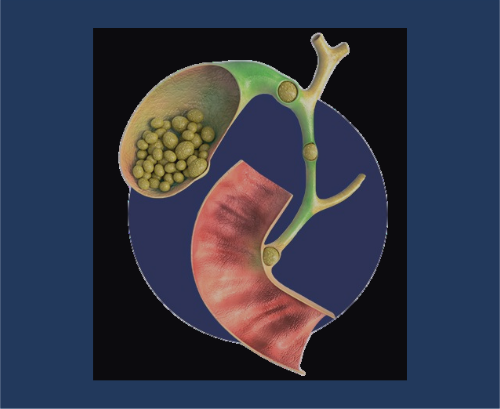
La colecistitis es la inflamación aguda o crónica de la vesícula biliar, generalmente causada por la obstrucción del conducto cístico por cálculos biliares, lo que provoca inflamación, infección y daño tisular.
La obstrucción del conducto cístico por un cálculo biliar provoca estasis biliar.
La acumulación de bilis genera inflamación de la pared vesicular, edema y posible infección bacteriana secundaria.
La presión intravesicular aumenta, comprometiendo la circulación sanguínea y causando necrosis en casos severos.
En la colecistitis crónica, la inflamación repetida produce fibrosis y engrosamiento de la pared vesicular.
Más frecuente en mujeres, especialmente mayores de 40 años.
Factores de riesgo: obesidad, embarazo, dieta alta en grasas, pérdida rápida de peso, antecedentes familiares.
La colecistitis aguda es una complicación común de la colelitiasis (presencia de cálculos en la vesícula).
Dolor abdominal intenso en hipocondrio derecho, que puede irradiar a la espalda o hombro derecho.
Náuseas y vómitos.
Fiebre y escalofríos.
Signo de Murphy positivo (dolor a la palpación profunda del hipocondrio derecho con inspiración).
Ictericia leve si hay obstrucción biliar asociada.
En casos graves, signos de peritonitis o sepsis.
Grupo farmacológico
Fármaco
Dosis
Vía de administración
Frecuencia
Indicaciones y notas
Analgésicos
Paracetamol, AINEs
Según peso y tolerancia
Oral / IV
Cada 6-8 horas
Control del dolor.
Antibióticos
Cefalosporinas, metronidazol
Según protocolo local
IV
Según indicación
En colecistitis con infección o riesgo de complicaciones.
Antieméticos
Metoclopramida
10 mg
IV / Oral
Cada 8 horas
Control de náuseas y vómitos.
Cirugía
Colecistectomía
Procedimiento quirúrgico
N/A
Única intervención
Tratamiento definitivo, preferible laparoscópico, idealmente en fase aguda.
Objetivos dietoterapéuticos:
Reducir la estimulación biliar y facilitar la digestión.
Prevenir complicaciones y mejorar la recuperación postquirúrgica.
Macronutrientes clave:
Dieta baja en grasas para disminuir la estimulación de la vesícula.
Proteínas y carbohidratos en cantidades adecuadas para mantener el estado nutricional.
Recomendaciones específicas:
Dieta fraccionada, con comidas pequeñas y frecuentes.
Evitar alimentos grasos, fritos, picantes y muy condimentados.
Aumentar ingesta de fibra para mejorar tránsito intestinal.
Hidratación adecuada.
En postoperatorio, reintroducción progresiva de grasas según tolerancia.
Colelitiasis
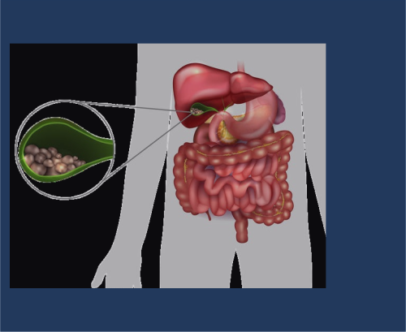
La colelitiasis es la formación de cálculos (piedras) en la vesícula biliar, compuestos principalmente por colesterol o pigmentos biliares. Muchas veces es asintomática y se detecta de forma incidental mediante ecografía abdominal. Sin embargo, puede causar síntomas y complicaciones como cólico biliar, colecistitis, coledocolitiasis, colangitis y pancreatitis litiásica.
Desequilibrio en los componentes de la bilis (colesterol, sales biliares y fosfolípidos) que favorece la cristalización y formación de cálculos.
Factores genéticos y ambientales influyen en la formación de cálculos.
Los cálculos pueden obstruir el conducto cístico o colédoco, provocando inflamación, infección o pancreatitis.
La obstrucción prolongada genera inflamación de la vesícula (colecistitis) o de las vías biliares (colangitis).
Afecta aproximadamente al 10-20% de la población adulta en países occidentales.
Más frecuente en mujeres, especialmente en edad fértil y multíparas.
Factores de riesgo: obesidad, edad avanzada, dieta occidental, antecedentes familiares, etnia (mayor en población mapuche e indoamericana), pérdida rápida de peso.
Prevalencia aumenta con la edad, llegando a más del 15% en personas entre 60 y 75 años.
La mayoría son asintomáticos.
Cólico biliar: dolor intenso, opresivo, continuo en hipocondrio derecho o epigastrio, que aparece 2-3 horas después de comer, dura 15 minutos a 2 horas y puede acompañarse de náuseas y vómitos.
Dolor puede irradiar a espalda o hombro derecho.
En complicaciones: fiebre, ictericia, signos de infección o inflamación local.
Síntomas asociados a colecistitis o pancreatitis si hay complicaciones.
Situación clínica
Tratamiento
Notas
Colelitiasis asintomática
Conducta expectante
No se indica cirugía salvo factores de riesgo o complicaciones futuras.
Colelitiasis sintomática
Colecistectomía laparoscópica
Procedimiento de elección para prevenir recurrencia y complicaciones.
Colelitiasis con contraindicación quirúrgica
Disolución con ácido ursodesoxicólico (en casos seleccionados)
Tratamiento médico alternativo, con eficacia variable y riesgo de recurrencia.
Manejo hospitalario con líquidos, analgésicos, antibióticos y colecistectomía urgente o diferida
Cirugía urgente en colecistitis aguda; manejo multidisciplinario en pancreatitis litiásica.
Objetivos dietoterapéuticos:
Prevenir formación de nuevos cálculos.
Controlar síntomas digestivos.
Mantener estado nutricional adecuado.
Macronutrientes clave:
Dieta baja en grasas saturadas para reducir estímulo biliar.
Aporte adecuado de proteínas y carbohidratos para energía y reparación tisular.
Recomendaciones específicas:
Dieta fraccionada en comidas pequeñas y frecuentes.
Evitar alimentos grasos, fritos, picantes y muy condimentados.
Aumentar ingesta de fibra para mejorar tránsito intestinal.
Hidratación adecuada.
En episodios agudos, dieta líquida o baja en residuos hasta resolución.
Pancreatitis
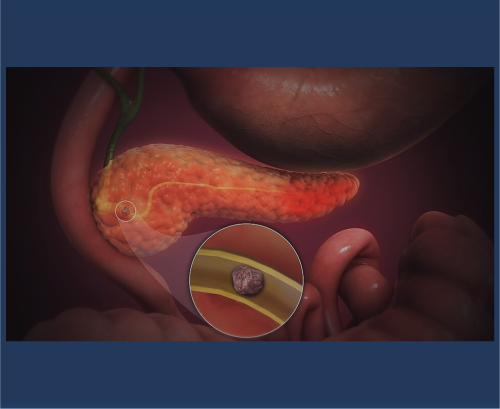
La pancreatitis es la inflamación del páncreas, que puede ser aguda o crónica. La pancreatitis aguda es una inflamación súbita que puede variar de leve a grave, mientras que la pancreatitis crónica es una inflamación persistente que conduce a fibrosis y pérdida de función pancreática.
Activación prematura de enzimas pancreáticas dentro del páncreas, causando autodigestión y daño tisular.
En pancreatitis aguda, la activación de tripsina desencadena cascada inflamatoria local y sistémica.
La pancreatitis crónica se caracteriza por inflamación crónica, fibrosis y destrucción progresiva del tejido glandular.
Causas principales: litiasis biliar (obstrucción del conducto pancreático), consumo excesivo de alcohol, hipertrigliceridemia, medicamentos, infecciones, traumatismos.
Incidencia aproximada de 5-30 casos por 100,000 habitantes/año.
Más frecuente en adultos jóvenes y de mediana edad.
Litiasis biliar y alcoholismo representan más del 70% de los casos.
La pancreatitis crónica es más común en hombres con consumo crónico de alcohol.
Dolor abdominal intenso, epigástrico, que puede irradiar a la espalda.
Náuseas y vómitos.
Fiebre y taquicardia en casos graves.
Signos de irritación peritoneal si hay necrosis o complicaciones.
En pancreatitis crónica: dolor recurrente, insuficiencia exocrina (malabsorción), diabetes mellitus.
Intervención
Descripción
Vía de administración
Frecuencia / Duración
Notas
Soporte hemodinámico
Reposición de líquidos y electrolitos para mantener perfusión y equilibrio hidroelectrolítico
Intravenosa
Continuo
Fundamental en pancreatitis aguda.
Analgésicos
Opioides (morfina, fentanilo) para control del dolor intenso
IV / IM / Oral
Según necesidad
Control adecuado del dolor para evitar complicaciones.
Nutrición
Nutrición enteral precoz preferida sobre parenteral
Oral / Enteral
Según tolerancia
Favorece recuperación y reduce complicaciones.
Antibióticos
Solo en casos de infección confirmada o sospechada
IV
Según indicación
No se recomienda profilaxis antibiótica rutinaria.
Tratamiento de complicaciones
Drenaje de colecciones, cirugía en necrosis infectada o complicaciones
Quirúrgica / Percutánea
Según caso
Manejo multidisciplinario en pancreatitis grave.
Objetivos dietoterapéuticos:
Mantener estado nutricional y evitar malnutrición.
Minimizar estimulación pancreática en fases agudas.
Promover recuperación y función pancreática.
Macronutrientes clave:
Dieta baja en grasas para reducir secreción pancreática.
Aporte adecuado de proteínas para reparación tisular.
Carbohidratos complejos para energía.
Recomendaciones específicas:
En pancreatitis aguda leve, iniciar alimentación oral temprana con dieta baja en grasas.
En pancreatitis grave, nutrición enteral precoz preferible a parenteral.
Fraccionar comidas en pequeñas porciones frecuentes.
Evitar alcohol y tabaco.
Suplementar enzimas pancreáticas en casos de insuficiencia exocrina crónica.
Sistema Endocrino
Bocio
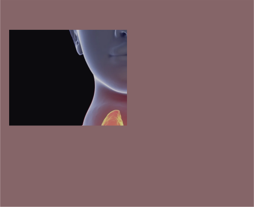
El bocio es el aumento del tamaño de la glándula tiroides, que puede ser difuso o nodular, y puede asociarse a una función tiroidea normal, aumentada o disminuida. Es la patología tiroidea de mayor prevalencia mundial y se manifiesta como un agrandamiento visible o palpable en la base del cuello.
El bocio se desarrolla como una respuesta adaptativa de las células foliculares tiroideas a factores que alteran la síntesis de hormonas tiroideas. La disminución en la producción de hormonas tiroideas (T3 y T4) provoca una reducción de la retroalimentación negativa sobre la hipófisis, lo que aumenta la secreción de TSH. La TSH estimula el crecimiento y la proliferación de la tiroides, generando hipertrofia e hiperplasia folicular.
Las causas incluyen:
Deficiencia de yodo, que limita la síntesis hormonal.
Estimulación anormal por TSH o anticuerpos (como en enfermedades autoinmunes).
Procesos inflamatorios (tiroiditis subaguda o crónica).
Enfermedades infiltrativas o tumorales.
Factores genéticos y ambientales que afectan la función tiroidea y la respuesta a la TSH.
Afecta a todas las edades, aunque es más frecuente en mujeres.
La causa más común a nivel mundial es la deficiencia de yodo, especialmente en zonas endémicas donde más del 10% de la población presenta bocio.
En países con yodación adecuada, las causas más frecuentes son la tiroiditis autoinmune (como Hashimoto) y el bocio multinodular.
La prevalencia en escolares puede llegar al 1-2% para tiroiditis autoinmune.
Factores genéticos y enfermedades asociadas (síndrome de Turner, Klinefelter, diabetes mellitus, celiaquía) aumentan el riesgo.
Agrandamiento visible o palpable en la base del cuello, que puede ser simétrico o asimétrico, difuso o nodular.
Puede no presentar síntomas si el bocio es pequeño y no compresivo.
Signos de compresión local si el bocio es grande: disfagia, disfonía, tos, dificultad respiratoria.
Síntomas relacionados con la función tiroidea:
Hipotiroidismo: fatiga, aumento de peso, intolerancia al frío, piel seca, estreñimiento.
Hipertiroidismo (en bocio tóxico): pérdida de peso, palpitaciones, nerviosismo, sudoración, temblor.
Grupo farmacológico
Fármaco
Dosis
Vía
Frecuencia
Hormonas tiroideas
Levotiroxina (T4)
50-150 mcg/día (ajustable)
Oral
Diario
Antitiroideos
Metimazol
Según indicación médica
Oral
Diario (varias dosis)
Antitiroideos
Propiltiouracilo
Según indicación médica
Oral
Diario (varias dosis)
Consideraciones terapéuticas:
En bocio por deficiencia de yodo, se suplementa yodo.
En bocio con hipotiroidismo (como en tiroiditis de Hashimoto), se trata con levotiroxina para normalizar la función tiroidea y reducir el tamaño del bocio.
En bocio hiperfuncionante (enfermedad de Graves o bocio tóxico), se usan antitiroideos para controlar la producción hormonal.
Objetivos dietoterapéuticos:
Prevenir y corregir la deficiencia de yodo.
Evitar sustancias bociógenas en exceso que interfieran con la función tiroidea.
Mantener un estado nutricional adecuado para apoyar la función tiroidea.
Macronutrientes clave:
Promover la ingesta adecuada de yodo (microelemento esencial).
No hay restricción específica de macronutrientes, pero se recomienda una dieta equilibrada.
Recomendaciones específicas:
Dieta rica en yodo: consumo de sal yodada, pescados, mariscos, lácteos.
Evitar el consumo excesivo de alimentos bociógenos (coles, nabos, mandioca) especialmente en contextos de deficiencia de yodo.
En áreas no endémicas, evitar medicamentos o sustancias con efecto bociógeno sin supervisión.
No hay una dieta específica tipo DASH o hiposódica para bocio, pero una dieta equilibrada y rica en micronutrientes es fundamental.
Hipotiroidismo
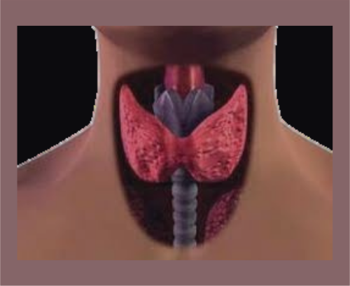
El hipotiroidismo es un síndrome clínico resultante de la deficiencia de hormonas tiroideas o, más raramente, de su resistencia periférica, que produce una disminución generalizada de los procesos metabólicos.
Se clasifica como:
Primario: fallo tiroideo.
Secundario: déficit de TSH.
Terciario: déficit de TRH.
Periférico: resistencia a hormonas tiroideas.
El hipotiroidismo primario puede ser:
Subclínico: TSH elevada con T4 normal.
Clínico: TSH elevada con T4 baja.
Hipotiroidismo primario (90-95% casos):
Tiroiditis autoinmune (Hashimoto):
Infiltración linfocitaria de la glándula tiroides.
Presencia de anticuerpos anti-TPO y anti-tiroglobulina.
Destrucción progresiva de folículos tiroideos.
Apoptosis de tirocitos mediada por células T.
Fibrosis y atrofia glandular.
Déficit de yodo:
Insuficiente sustrato para síntesis hormonal.
Hipotiroidismo con bocio compensador.
Iatrogénico:
Post-tiroidectomía.
Post-radioyodo.
Fármacos antitiroideos.
Amiodarona, litio, inhibidores de tirosina quinasa.
Disgenesia tiroidea:
Agenesia, hipoplasia o ectopia tiroidea.
Causa más frecuente de hipotiroidismo congénito.
Hipotiroidismo central (5-10% casos):
Secundario: déficit de TSH por patología hipofisaria.
Terciario: déficit de TRH por patología hipotalámica.
Menor elevación de TSH o TSH inapropiadamente normal.
Hipotiroidismo periférico (raro):
Resistencia a hormonas tiroideas.
Defectos en transportadores de hormonas tiroideas.
Defectos en desyodasas.
Consecuencias fisiopatológicas:
Disminución del metabolismo basal.
Reducción del consumo de oxígeno.
Disminución de la termogénesis.
Alteración del metabolismo de carbohidratos, lípidos y proteínas.
Acumulación de glucosaminoglicanos en tejidos (mixedema).
Enlentecimiento de la conducción nerviosa.
Disminución del gasto cardíaco.
Alteración de la función renal y filtrado glomerular.
Anemia (normocítica, macrocítica o microcítica).
Complicaciones graves:
Coma mixedematoso: hipotiroidismo severo con hipotermia, hipoventilación, hipotensión e hiponatremia.
Derrame pericárdico y pleural.
Insuficiencia cardíaca.
Íleo paralítico.
Encefalopatía de Hashimoto.
Prevalencia global: 1-2% de la población.
Hipotiroidismo subclínico: 4-10%.
Mayor frecuencia en mujeres (5-10:1).
Aumenta con la edad (>10% en mayores de 65 años).
Tiroiditis autoinmune: principal causa en áreas con suficiencia de yodo.
Déficit de yodo: principal causa en áreas con deficiencia.
Factores de riesgo:
Sexo femenino.
Edad avanzada.
Historia familiar de enfermedad tiroidea autoinmune.
Otras enfermedades autoinmunes.
Síndrome de Down, Turner.
Radiación cervical previa.
Posparto reciente.
Fármacos (amiodarona, litio, interferón).
Fatiga, astenia, somnolencia.
Intolerancia al frío.
Aumento de peso con apetito disminuido.
Estreñimiento.
Piel seca, fría y pálida.
Cabello seco, quebradizo y caída.
Edema palpebral y facial (mixedema).
Voz ronca.
Bradicardia.
Derrame pericárdico o pleural.
Parestesias (síndrome del túnel carpiano).
Alteraciones menstruales (menorragia).
Infertilidad, abortos recurrentes.
Disminución de libido.
Deterioro cognitivo, depresión.
Retraso en reflejos osteotendinosos.
Anemia.
Hipercolesterolemia.
Elevación de CPK.
Hiponatremia.
Grupo farmacológico
Fármaco
Dosis
Vía de administración
Frecuencia
Hormonas tiroideas
Levotiroxina (T4)
1.6-1.8 μg/kg
Oral
Diaria, en ayunas
Hormonas tiroideas
Liotironina (T3)
5-25 μg
Oral
2-3 veces/día (casos seleccionados)
Combinación T4+T3
T4/T3 (proporción 4:1)
Variable
Oral
Diaria (casos seleccionados)
Consideraciones:
Inicio a dosis bajas en ancianos y cardiopatía.
Ajuste gradual según niveles de TSH.
Objetivo: normalización de TSH (0.5-4.5 mUI/L).
Monitorización periódica de función tiroidea.
Tratamiento de comorbilidades asociadas.
Tratamiento urgente en coma mixedematoso (levotiroxina IV).
Objetivos dietoterapéuticos:
Mantener un peso corporal adecuado.
Prevenir el estreñimiento.
Controlar la dislipidemia asociada.
Asegurar un aporte adecuado de yodo.
Optimizar la absorción de levotiroxina.
Macronutrientes clave:
Proteínas: 0.8-1.0 g/kg/día.
Carbohidratos: 50-55% del aporte calórico total (complejos, bajo índice glucémico).
Lípidos: 25-30% del aporte calórico total (énfasis en grasas insaturadas).
Aporte calórico: ajustado al metabolismo basal disminuido.
Recomendaciones específicas:
Control calórico: reducción moderada de calorías (200-500 kcal/día menos).
Distribución en 5-6 comidas pequeñas.
Evitar ayunos prolongados.
Optimización de absorción de levotiroxina:
Tomar en ayunas, 30-60 minutos antes del desayuno.
Separar 4 horas de suplementos de calcio, hierro, antiácidos.
Evitar consumo simultáneo de soja, café, fibra en exceso.
Prevención del estreñimiento:
Aumento progresivo de fibra dietética (25-30 g/día).
Adecuada hidratación (2-2.5 L/día).
Alimentos integrales, frutas y verduras.
Control de dislipidemia:
Limitar grasas saturadas y trans.
Aumentar ácidos grasos omega-3.
Incrementar consumo de fibra soluble.
Alimentos funcionales (esteroles vegetales).
Aporte adecuado de yodo:
150 μg/día en adultos.
Uso de sal yodada.
Pescados y mariscos.
Otros nutrientes importantes:
Selenio (nueces de Brasil, pescados).
Zinc (carnes, mariscos).
Vitamina D (exposición solar moderada, lácteos fortificados).
Vitamina B12 (especialmente en anemia perniciosa asociada).
Actividad física regular adaptada a capacidad.
Educación nutricional personalizada.
Hipertiroidismo
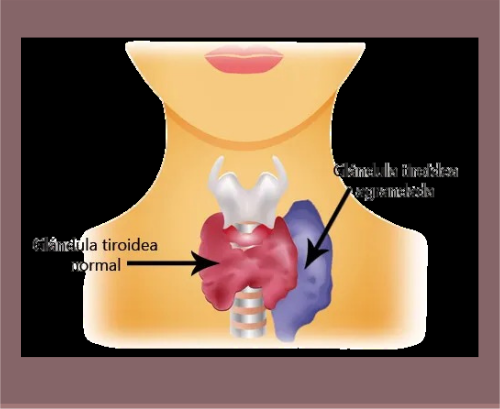
El hipertiroidismo es un síndrome clínico resultante del exceso de hormonas tiroideas circulantes, que produce un estado hipermetabólico generalizado.
Se debe distinguir de la tirotoxicosis, que se refiere a cualquier condición con exceso de hormonas tiroideas, independientemente de su origen (tiroideo o extratiroideo).
Las causas más frecuentes son la enfermedad de Graves, el bocio multinodular tóxico y el adenoma tóxico.
Enfermedad de Graves (50-80% casos):
Trastorno autoinmune con anticuerpos estimulantes del receptor de TSH (TRAb).
Activación continua del receptor de TSH independiente de retroalimentación hipofisaria.
Hiperplasia difusa de la glándula tiroides.
Aumento de vascularización tiroidea.
Infiltración linfocitaria.
Oftalmopatía infiltrativa (40-50%) por reacción cruzada contra antígenos orbitarios.
Dermopatía (mixedema pretibial) por depósito de mucopolisacáridos.
Bocio multinodular tóxico (15-30% casos):
Nódulos autónomos con mutaciones activadoras del receptor de TSH o proteína G.
Funcionamiento independiente del control hipofisario.
Supresión de TSH.
Hipertiroidismo de desarrollo gradual.
Adenoma tóxico (5-10% casos):
Nódulo único hiperfuncionante.
Mutaciones somáticas activadoras del receptor de TSH o proteína G.
Supresión del tejido tiroideo normal circundante.
Tiroiditis:
Subaguda (De Quervain): liberación de hormona preformada por destrucción inflamatoria.
Silente o postparto: destrucción autoinmune transitoria.
Fase inicial hipertiroidea seguida de fase hipotiroidea.
Hipertiroidismo inducido por yodo (Jod-Basedow):
En bocio preexistente o enfermedad tiroidea latente.
Tras exposición a exceso de yodo (contraste, amiodarona).
Hipertiroidismo por fuentes exógenas:
Iatrogénico por sobredosificación de levotiroxina.
Tirotoxicosis facticia (ingestión subrepticia).
Struma ovarii (tejido tiroideo en teratoma ovárico).
Efectos tisulares del exceso de hormonas tiroideas:
Aumento del metabolismo basal y consumo de oxígeno.
Incremento de la termogénesis.
Taquicardia, aumento del gasto cardíaco.
Aumento de contractilidad miocárdica.
Vasodilatación periférica.
Hiperreflexia y temblor.
Aumento de resorción ósea.
Catabolismo proteico aumentado.
Intolerancia a la glucosa.
Aumento de motilidad intestinal.
Complicaciones graves:
Crisis tirotóxica: exacerbación aguda con fiebre, taquicardia, alteración mental.
Fibrilación auricular e insuficiencia cardíaca.
Miopatía tirotóxica.
Osteoporosis acelerada.
Oftalmopatía severa con neuropatía óptica.
Prevalencia global: 0.5-2% de la población.
Mayor frecuencia en mujeres (5-10:1).
Pico de incidencia de enfermedad de Graves: 30-50 años.
Bocio multinodular tóxico: más frecuente en mayores de 60 años.
Aporte calórico: aumentado según grado de hipermetabolismo (30-50% adicional).
Recomendaciones específicas:
Aumento calórico: 500-1000 kcal adicionales según severidad.
Distribución en 5-6 comidas al día.
Alimentos de alta densidad nutricional.
Proteínas de alto valor biológico: carnes magras, pescados, huevos, lácteos, legumbres combinadas con cereales.
Control de síntomas gastrointestinales: comidas frecuentes y de menor volumen, evitar alimentos irritantes en caso de diarrea.
Limitar cafeína y alcohol.
Hidratación adecuada: 2.5-3 litros diarios, reposición electrolitos si sudoración excesiva.
Micronutrientes importantes: calcio y vitamina D (prevención osteoporosis), vitaminas del grupo B, antioxidantes (C, E, selenio).
Consideraciones especiales: evitar suplementos con yodo, precaución con alimentos muy ricos en yodo, adecuado aporte de folatos si se usa propiltiouracilo, restricción calórica contraindicada.
Educación nutricional personalizada y seguimiento del estado nutricional.
Adaptación de la dieta según evolución del tratamiento.
Síndrome de Cushing
El síndrome de Cushing es un conjunto de signos y síntomas causados por una elevación persistente y excesiva de cortisol en sangre, ya sea por producción endógena aumentada o por administración exógena de glucocorticoides. La enfermedad de Cushing es una forma específica causada por un adenoma hipofisario que produce exceso de hormona adrenocorticotrópica (ACTH), estimulando la producción suprarrenal de cortisol.
El síndrome de Cushing puede originarse por:
Producción excesiva de ACTH por un adenoma hipofisario (enfermedad de Cushing), que estimula la corteza suprarrenal a secretar cortisol en exceso.
Tumores suprarrenales que producen cortisol de forma autónoma (adenomas o carcinomas).
Producción ectópica de ACTH por tumores no hipofisarios (p. ej., carcinoma pulmonar de células pequeñas).
Administración prolongada de glucocorticoides exógenos.
El cortisol en exceso altera el metabolismo de carbohidratos, grasas y proteínas, suprime la respuesta inmune, aumenta la presión arterial y afecta múltiples órganos y tejidos.
El síndrome de Cushing es infrecuente, con una incidencia estimada de 2-3 casos por millón al año.
La enfermedad de Cushing (hipersecreción hipofisaria de ACTH) representa aproximadamente el 70-85% de los casos endógenos.
Afecta más a mujeres que a hombres, especialmente en edad adulta joven y media.
Otras causas, como tumores suprarrenales o ectópicos, son menos comunes.
Obesidad central o troncal, con extremidades delgadas.
Cara redonda, roja y llena ("cara de luna llena").
Acumulación de grasa en la parte superior de la espalda ("joroba de búfalo").
Estrías cutáneas anchas, violáceas o purpúreas, especialmente en abdomen, muslos y mamas.
Piel fina, frágil, con hematomas frecuentes y lenta cicatrización.
Debilidad muscular proximal y atrofia, intolerancia al ejercicio.
Hipertensión arterial.
Diabetes mellitus o intolerancia a la glucosa.
Osteoporosis con riesgo de fracturas vertebrales y costales.
En mujeres: hirsutismo, irregularidades menstruales o amenorrea.
En hombres: disminución de la libido y disfunción eréctil.
En niños: crecimiento lento y baja estatura.
Grupo farmacológico
Fármaco
Dosis y uso
Vía
Frecuencia
Inhibidores de la esteroidogénesis
Ketoconazol
Según indicación médica
Oral
Variable
Inhibidores de la esteroidogénesis
Metirapona
Según indicación médica
Oral
Variable
Inhibidores de la esteroidogénesis
Mitotano
Según indicación médica
Oral
Variable
Antagonistas de receptores de glucocorticoides
Mifepristona
En casos seleccionados
Oral
Diario
Consideraciones terapéuticas:
El tratamiento definitivo suele ser quirúrgico, para extirpar el adenoma hipofisario o tumores suprarrenales.
En casos de enfermedad de Cushing, la cirugía transesfenoidal del adenoma hipofisario es el estándar.
Radioterapia o medicamentos para controlar la producción de cortisol se emplean en casos refractarios o recurrentes.
Objetivos dietoterapéuticos:
Controlar el aumento de peso y la obesidad central.
Manejar la hipertensión y la diabetes asociadas.
Prevenir la osteoporosis mediante un aporte adecuado de calcio y vitamina D.
Mejorar el estado general y la recuperación metabólica.
Macronutrientes clave:
Dieta normocalórica o hipocalórica para controlar el peso corporal.
Restricción moderada de sodio para controlar la hipertensión y la retención de líquidos.
Aporte adecuado de proteínas para preservar la masa muscular.
Control de carbohidratos para manejo glucémico.
Recomendaciones específicas:
Dieta baja en sodio para reducir la hipertensión y el edema.
Dieta rica en calcio y vitamina D para prevenir la osteoporosis.
Control del índice glucémico para manejo de diabetes o intolerancia a la glucosa.
Evitar alimentos procesados y azúcares simples en exceso.
Promover actividad física según tolerancia para preservar masa muscular y función cardiovascular.
Otros temas
Cancer (Parte 1)
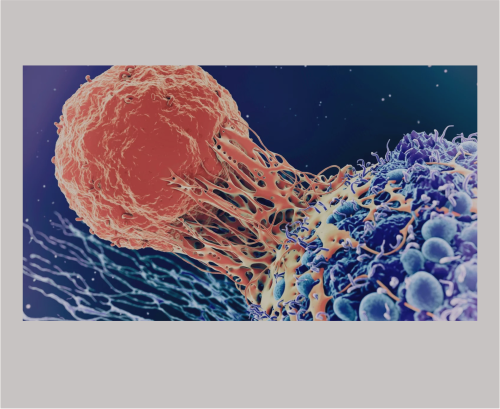
El cáncer es un conjunto de enfermedades caracterizadas por la multiplicación descontrolada de células anormales que pueden invadir tejidos circundantes y diseminarse a otras partes del cuerpo (metástasis). No es una sola enfermedad, sino un grupo heterogéneo con distintos orígenes y comportamientos.
El cáncer se origina por mutaciones genéticas que alteran genes reguladores del ciclo celular, apoptosis y reparación del ADN.
Estas mutaciones pueden ser inducidas por factores genéticos, ambientales (radiación, carcinógenos químicos), infecciosos (virus oncogénicos) y hábitos de vida (tabaco, dieta).
Las células cancerosas evaden la muerte celular programada, estimulan angiogénesis, invaden tejidos y metastatizan.
El crecimiento tumoral implica interacción con el microambiente, incluyendo tejido conectivo y vasos sanguíneos inducidos por el tumor.
Carcinomas: cánceres que se originan en células epiteliales, que cubren superficies externas e internas del cuerpo. Representan más del 80% de los cánceres. Ejemplos: carcinoma de pulmón, mama, colon, próstata.
Adenocarcinomas: carcinomas que se forman en células epiteliales glandulares productoras de moco o líquido.
Sarcomas: tumores malignos originados en tejidos mesenquimales como hueso, músculo, cartílago y tejido conectivo.
Gliomas: tumores derivados de células gliales del sistema nervioso central.
Leucemias: cánceres de células sanguíneas que afectan la médula ósea y sangre periférica.
Linfomas: tumores malignos de linfocitos, incluyendo linfoma de Hodgkin y linfoma no Hodgkin.
El cáncer es una de las principales causas de morbilidad y mortalidad a nivel mundial.
Los tipos más comunes varían según región y sexo, pero incluyen cáncer de mama, pulmón, colon, próstata y estómago.
Factores de riesgo incluyen edad avanzada, tabaquismo, exposición a carcinógenos, infecciones virales (VPH, hepatitis B y C), dieta, obesidad y antecedentes familiares.
Presencia de masas o bultos palpables.
Pérdida de peso inexplicada y fatiga.
Dolor localizado o generalizado.
Cambios en la piel, sangrados anormales o secreciones.
Síntomas específicos según órgano afectado (tos persistente en cáncer de pulmón, sangrado vaginal en cáncer de cuello uterino, etc.).
Síntomas sistémicos como fiebre, sudoración nocturna y anemia.
Cancer (Parte 2)
Los cánceres más frecuentes a nivel mundial y en Estados Unidos, con alta incidencia y mortalidad, incluyen:
Tipo de cáncer
Casos nuevos estimados (2025, EE.UU.)
Muertes estimadas (2025, EE.UU.)
Cáncer colorrectal
154,270
52,900
Cáncer de mama (mujeres)
316,950
42,170
Cáncer de próstata
313,780
35,770
Cáncer de pulmón (bronquios)
226,650
124,730
Cáncer de páncreas
67,440
51,980
Leucemia (todos los tipos)
66,890
23,540
Linfoma no Hodgkin
80,350
19,390
Cáncer de hígado y conducto biliar
42,240
30,090
Melanoma
104,960
8,430
Cáncer de riñón
80,980
14,510
Cáncer de tiroides
44,020
2,290
Cáncer de vejiga
84,870
17,420
Cáncer de endometrio
69,120
13,860
En 2025 se estiman más de 2 millones de nuevos casos de cáncer en Estados Unidos y más de 600,000 muertes.
Los cánceres de próstata, pulmón y colorrectal representan casi la mitad de los diagnósticos en hombres.
En mujeres, los cánceres más frecuentes son mama, pulmón y colorrectal, representando más de la mitad de los casos.
La incidencia varía por sexo, edad, factores genéticos, ambientales y estilos de vida.
A nivel mundial, los cánceres con mayor incidencia son pulmón, mama, colorrectal, próstata y estómago.
La mortalidad más alta corresponde a cáncer de pulmón, colorrectal, estómago y hepatocarcinoma.
Varía según el tipo y localización del cáncer.
Síntomas generales incluyen pérdida de peso inexplicada, fatiga, dolor, presencia de masas o bultos, sangrados anormales o cambios en la piel.
Síntomas específicos dependen del órgano afectado (tos persistente en cáncer de pulmón, sangrado vaginal en cáncer de cuello uterino, cambios en hábitos intestinales en cáncer colorrectal, etc.).
Los síntomas pueden aparecer tardíamente, por lo que la detección precoz es fundamental.
Historia clínica y examen físico.
Estudios de imagen: ecografía, tomografía computarizada, resonancia magnética, PET.
Biopsia para confirmación histológica.
Marcadores tumorales específicos según tipo de cáncer.
Estudios genéticos y moleculares en algunos casos para guiar tratamiento.
Individualizado según tipo, estadio y características del tumor y paciente.
Incluye cirugía, quimioterapia, radioterapia, terapias dirigidas, inmunoterapia y hormonoterapia.
Tratamiento paliativo en casos avanzados para mejorar calidad de vida.
Seguimiento multidisciplinario y apoyo psicosocial.
Evitar factores de riesgo: tabaco, alcohol, obesidad, exposición a carcinógenos.
Vacunación contra virus oncogénicos (VPH, hepatitis B).
Tamizajes periódicos para cáncer de mama, cuello uterino, colon y próstata.
Promoción de estilos de vida saludables: dieta equilibrada, actividad física, control del peso.
Quemaduras graves
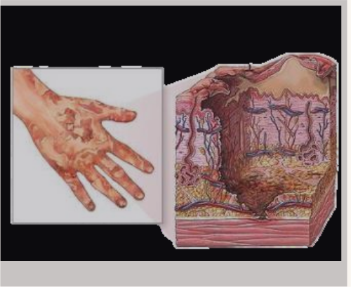
Las quemaduras graves son lesiones extensas o profundas de la piel y tejidos subyacentes que comprometen una gran superficie corporal o afectan estructuras críticas, poniendo en riesgo la vida del paciente. Estas quemaduras pueden involucrar la destrucción total de la epidermis, dermis, tejido subcutáneo, músculo e incluso hueso.
La lesión térmica provoca destrucción celular directa y daño vascular, alterando la barrera cutánea y desencadenando una respuesta inflamatoria sistémica.
La pérdida de la barrera cutánea facilita la entrada de microorganismos y la pérdida de líquidos, electrolitos y proteínas, generando deshidratación y choque hipovolémico.
La liberación masiva de mediadores inflamatorios puede causar síndrome de respuesta inflamatoria sistémica (SIRS) y fallo multiorgánico.
La necrosis muscular puede liberar mioglobina, que puede dañar los riñones si no se diluye adecuadamente con líquidos.
La formación de escaras rígidas puede comprometer la circulación y respiración, requiriendo escarotomía para liberar presión.
Las quemaduras graves representan una proporción menor de todas las quemaduras, pero con alta morbilidad y mortalidad.
Afectan principalmente a hombres jóvenes y adultos en edad laboral.
Las causas más frecuentes incluyen fuego, líquidos calientes, productos químicos, electricidad y radiación.
La mortalidad depende de la extensión, profundidad, edad, comorbilidades y calidad del tratamiento.
Quemaduras de espesor total o parcial profundo que afectan más del 10% de la superficie corporal total (SCT) en adultos o más del 5% en niños.
Piel carbonizada, blanca, negra o roja fija, sin sensibilidad en áreas profundas.
Dolor intenso en zonas con tejido viable.
Edema local y sistémico.
Signos de choque hipovolémico: hipotensión, taquicardia, palidez.
Dificultad respiratoria si hay quemaduras en cara, cuello o inhalación de humo.
Formación de ampollas, necrosis y riesgo de infección.
Intervención
Descripción
Vía de administración
Frecuencia / Duración
Notas
Reposición de líquidos
Administración masiva de líquidos intravenosos según fórmula de Parkland para prevenir choque hipovolémico
Intravenosa
Inmediata y continua
Fundamental para evitar insuficiencia renal y choque.
Control de la vía aérea
Oxígeno suplementario y, si es necesario, intubación para asegurar ventilación en quemaduras faciales o inhalación de humo
Inhalatoria / Intubación
Según necesidad
Previene insuficiencia respiratoria.
Analgesia
Opioides (morfina, fentanilo) para control del dolor intenso
IV / IM / Oral
Según necesidad
El dolor puede ser muy intenso, especialmente durante cambios de apósitos.
Limpieza y desbridamiento
Retiro de tejido necrótico y limpieza de la herida para prevenir infección
Quirúrgica / Ambulatoria
Según evolución
Facilita la cicatrización y reduce riesgo de sepsis.
Apósitos y ungüentos tópicos
Sulfadiazina de plata, bacitracina o apósitos especiales que protegen y controlan infección
Tópica
Diario o según indicación
Algunos apósitos permiten evacuación de líquidos y control bacteriano.
Escarotomía
Incisión quirúrgica para liberar presión en extremidades o tórax cuando la escara compromete circulación o respiración
Quirúrgica
Según indicación
Evita síndrome compartimental y falla respiratoria.
Cirugía reconstructiva
Injertos de piel autólogos o dermis artificial para cubrir áreas extensas o profundas
Quirúrgica
Según evolución
Mejora la cicatrización y función, reduce hospitalización.
Prevención y tratamiento de infecciones
Antibióticos sistémicos si hay infección confirmada o sospechada
IV / Oral
Según indicación
No se recomienda profilaxis antibiótica rutinaria.
Vacunación
Vacuna antitetánica
IM
Según esquema
Previene tétanos, especialmente en quemaduras profundas.
Soporte nutricional
Nutrición enteral o parenteral para cubrir demandas metabólicas elevadas
Enteral / IV
Continuo
Fundamental para la recuperación y cicatrización.
Fisioterapia y terapia ocupacional
Ejercicios para mantener movilidad y función articular
Física / Ocupacional
Según evolución
Previene contracturas y mejora recuperación funcional.
Enfriar la quemadura con agua tibia para detener el daño térmico, evitando el uso de hielo.
Retirar ropa y objetos que puedan retener calor.
Evaluar y asegurar vía aérea, respiración y circulación.
Iniciar reposición hídrica intravenosa precoz.
Control del dolor y traslado a centro especializado si es necesario.


.svg)